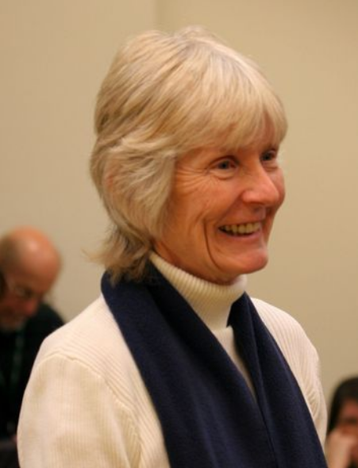
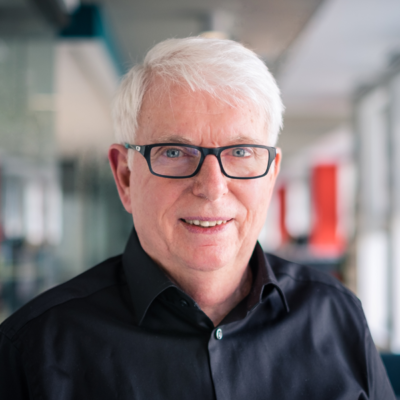
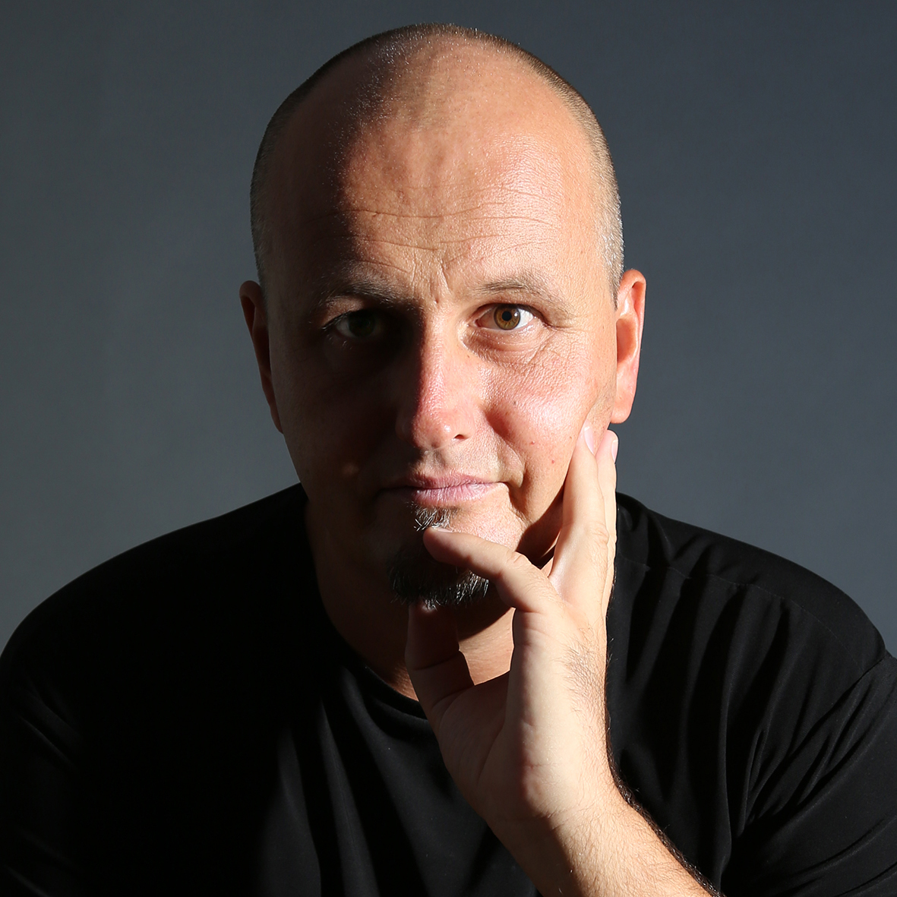
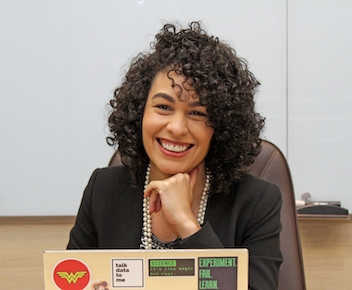
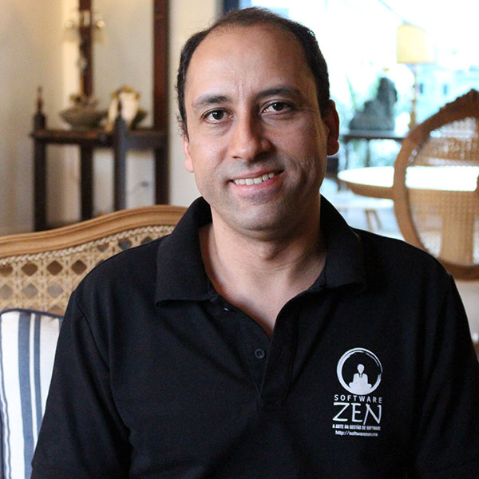
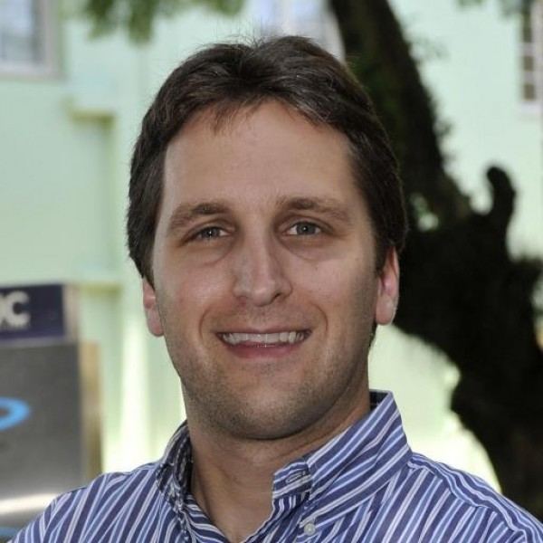

Dia 1
Terça-feira, 05/10
Abertura
About trees, agility and me

Linda Rising
Linda Rising é uma consultora independente que mora perto de Nashville, Tennessee. Linda tem um Ph.D. da Universidade Estadual do Arizona em métricas de projeto baseadas em objetos. Sua formação inclui ensino universitário, bem como trabalho em telecomunicações, aviônica e sistemas de armas táticas. Ela é uma apresentadora internacionalmente conhecida sobre tópicos relacionados ao desenvolvimento ágil, padrões, retrospectivas, o processo de mudança e a conexão entre as neurociências mais recentes e o desenvolvimento de software. Linda é autora de numerosos artigos e cinco livros. Ela foi homenageada pelo Fórum Mundial de Agilidade em 2020 com seu Prêmio Lifetime Achievement. Seu web site é: lindarising.org
Detalhes em breve
Startup as a Service: um modelo ágil para criação e desenvolvimento de negócios de inovação

Eduardo Meira Peres
Sou co-CEO na DBServer e professor na PUCRS. Para fazer a coisa certa, do jeito certo, atuo em projetos de inovação usando Design Thinking, Lean Startup e Métodos Ágeis. Procuro compartilhar o que aprendo, no Agile Brazil tenho palestrado desde 2012 e participei algumas vezes do time de avaliação.
Vamos apresentar um modelo adaptativo para o fomento à geração de novos negócios e desenvolvimento de startups baseado nos princípios ágeis e no conceito de Startup Studio. Esta abordagem tem por objetivo disponibilizar aos empreendedores e às organizações a excelência técnica necessária à criação e tração de empreendimentos inovadores, especialmente em um cenário de baixa capacidade de investimento, que é um cenário típico em ambientes de inovação. Serão apresentados casos envolvendo a criação de um novo negócio entre empresas, o crescimento de startups já em funcionamento e a criação de startups em grandes corporações, destacando-se os modelos de negócios adotados e explorando suas potencialidades, dificuldades enfrentadas e alternativas de solução.
Criando jurídicos menos jurássicos

Ceci Fernandes
Motivada por enxergar melhoria acontecendo e generalista de coração, Ceci já trabalhou com todo o espectro da agilidade: desde agile coaching e gestão de times e indivíduos até entrega de valor através da produção de código e automatização de tarefas. Co-autora de treinamentos de agilidade da Caelum, board member da Agile Alliance Brazil, líder do capítulo de Agilidade no Nubank desde sua criação, ela faz questão de se envolver com comunidades e busca melhorar suas habilidades todos os dias, através de prática deliberada do que ela acredita que precisa, mais urgentemente, ser melhorado. Ceci palestra desde 2010, já apresentou sessões em eventos relevantes como a Agile Brazil, QCon, Agile Conference, Caipira Ágil, entre muitos outros.

Nathália Pais Ferreira
Nathália Pais Ferreira, Belo-Horizontina morando em São Paulo há 4 anos. Graduada em Direito e pós-graduada em Direito de Empresa pela PUC Minas. Atualmente atua como advogada no Nubank, eleita uma das empresas mais inovadoras do mundo segundo a revista americana Time em 2021. Atuou na Creditas também como advogada de 2017 a 2020, também considerada uma das fintechs mais inovadoras do mundo segundo o ranking da KPMG em 2020. Entusiasta de direito digital, legal thinking e visual law.
Por muito tempo o jurídico foi visto como um departamento com pessoas conservadoras, apegadas a termos técnicos, robustos, difíceis e que por muitas vezes se tornavam mais um obstáculo ao desenvolvimento de inovações ao barrar o “desconhecido”. Hoje, porém, para acompanhar um mercado em constantes mudanças, os departamentos jurídicos precisam se reinventar e se adaptar à agilidade com que as inovações surgem. Considerando esse cenário, desde o ano passado, o time do Jurídico no Nubank vem dando passos na direção da agilidade. Venha conhecer o caminho que trilhamos até agora, como quebramos silos e deixamos o trabalho mais visível, em busca da eficiência, de maior cooperação entre a equipe e do desenvolvimento da carreira dos integrantes do time.
Data Mesh
Ricardo Wendell
Possui mais de 16 anos de experiência desenvolvendo soluções em software e dados para diferentes indústrias. Como liderança técnica vem apoiando times e clientes, projetando e modernizando plataformas de dados para diferentes cenários nos últimos 6 anos. Atualmente é Principal Consultant na Thoughtworks apoiando projetos e iniciativas em Data & IA.
Lean Inception: 7 dicas de como turbina-la

Fábio Trierveiler
Gerente de Transformação Digital Lean no Lean Institute Brasil, atua com desenvolvimento ágil de software desde 2008. Possui experiência em empresas de diversos portes e segmentos, especialmente na área de tecnologia, utilizando-se de diversas práticas como lean, agilidade, coaching, design thinking, management 3.0. Já foi desenvolvedor, QA de software mobile, analista de qualidade e processos, scrum master, enterprise agile coach e lean-agile leader, além de atuar também como professor dos MBAs em Gestão Ágil de Projetos, de Lean Manufacturing e Startups. Especialista em Engenharia de Projetos de Software e também em Qualidade e Engenharia, Bacharel em Sistemas de Informação.
Desde 2011 quando Paulo Caroli uniu conceitos de Design Thinking com Lean Startup, a Lean Inception vem evoluindo dia após dia. Nas dezenas de imersões que facilitei desde 2017, enfrentei muitos desafios, algumas saias justas e em grande maioria, bastante aprovação dos clientes em finalmente descobrir o que queriam (e também o que não queriam). E disso tudo, começam a surgir algumas perguntas: Quem deve (e não deve) participar? Demora 5 dias mesmo? O Canvas MVP é realmente necessário? E tantas outras. Nesta palestra, trago 7 dicas práticas de como evoluir a performance da sua Lean Inception.
DESOBEDEÇA: Será que conseguiremos inovar se continuarmos seguindo todas as regras?

Maíra Blasi
Maíra Blasi acredita em formas mais horizontais e evolutivas de trabalho. É Consultora, Professora e Palestrante. Possui mais de 15 anos de uma carreira desenvolvida em Marketing e Transformação Digital, em empresas como Itaú, TIM, Pagseguro e GetNinjas. Professora e palestrante de Agilidade na Sputnik, Perestroika e TERA, com passagens em empresas como Boticário, Rede Globo, Ifood, etc. Já palestrou em eventos como The Developers Conference BH e SP, Agile BR e Agile Trends. Mentora de executivos e profissionais de empresas como BR Malls, Ford e Buzzfeed. Possui MBA em Marketing pela Universidade Federal Fluminense e é especializada em Comunicação Não Violenta pela Fundação Escola de Sociologia e Política de São Paulo. Certified Kanban Systems Design pela LeanKanban University. Saxofonista e ativista – toca e é co-fundadora das Obscênicas, uma fanfarra carnavalesca formada somente por mulheres em SP.
O trabalho do Agente de Mudança costuma ser bastante árduo, já que a maioria das empresas quer mudar as coisas, pero no mucho. É o famoso vamos mudar, mas não podemos quebrar nada no meio do caminho. Quem disse que as coisas precisam ser como são? O que nos impede de mudar? Será que conseguiremos fazer algo realmente inovador se continuarmos a seguir todas as regras? Não existe mudança sem desobediência. Nessa palestra falaremos como a desobediência organizacional pode se extremamente útil e a importância dos rebeldes com causa nas transformações que queremos ver dentro das empresas.
Green Cloud
Amanda Mattos
Com mais de 20 anos de carreira profissional, ele é muito experiente na construção de equipes, lançamento de produtos e na adoção de métodos Lean, ágeis e de design thinking para orientar o sucesso na criação e escala de negócios. Ele possui experiência prévia como empreendedor e no apoio do lançamento de novos negócios na Europa e América Latina.
É inegável o poder de transformação das nuvens. O impacto no meio ambiente também é. Por que é importante falarmos disto e o que podemos fazer para minimizar o dano?
Sensible Defaults
Mariana Thiago
Pessoa desenvolvedora há mais de 20 anos, 4 deles na Thoughtworks; cada vez mais dedicado em como montar e manter ambientes de engenharia que permitam ao time aumentar o seu impacto.
Thiago Palma
Analista de Negócios com mais de 12 anos de experiência, 5 deles na Thoughtworks, entregando projetos digitais em diferentes domínios. Trazendo aos times o propósito pelo qual construímos o que construímos na intersecção de tecnologia e negócios, buscando soluções simples para problemas complexos.
Cada cliente tem suas necessidades, para cada uma delas podem existir diferentes possibilidades de soluções, e em cada um desses ambientes é necessário manter um ritmo de entrega contínua e com qualidade. Para fazer isso, a Thoughtworks tem seus Valores Centrais, e os Padrões Sensatos são a maneira como trazemos esses valores centrais para a rotina dos times. Venha conhecer um pouco de nosso modelo de trabalho.
Relato de caso - Os impactos de uma transformação digital no dia a dia de equipes
Alexandre Klaser
Alexandre é o líder da linha de serviço de Digital Transformation & Operations na Thoughtworks Brasil. Nesse papel, ele lidera engajamentos de transformação digital em clientes ao redor do globo, trabalhando com executivas para definir e avançar em suas transformações digitais e estratégias de inovação corporativa, liderando assessments e equipes de transformação. Com mais de 20 anos de carreira profissional, ele é muito experiente na construção de equipes, lançamento de produtos e na adoção de métodos Lean, ágeis e de design thinking para orientar o sucesso na criação e escala de negócios. Ele possui experiência prévia como empreendedor e no apoio do lançamento de novos negócios na Europa e América Latina. Previamente na Thoughtworks ele foi o Head of Global Health para a região da América Latina e membro do grupo de liderança de uma das maiores contas da empresa na região, baseada no Chile. Trabalhando para a Thoughtworks, o Alexandre já fez parte de equipes em diversas partes do mundo, tendo trabalhado com clientes e parceiras em países como Estados Unidos, Brasil, Chile, Equador, Índia, Espanha, Guatemala e Haiti.
A transformação digital geralmente se inicia como uma iniciativa estratégica da empresa, de cima para baixo. Mas, no final de contas, são as equipes de produtos digitais as últimas responsáveis pela entrega de valor. Sendo assim, é natural que haja impacto em seu dia-a-dia, sendo portanto essencial incluir a perspectiva das equipes durante todo o trabalho de transformação. Nesta sessão iremos trazer alguns relatos de como se dá esse processo, quais fatores devem ser considerados, pontos de atenção e alguns insights que podem ser muito úteis caso sua empresa esteja passando ou pensando em passar por um processo de transformação digital.
Inception Remota
A talk Lean Inception Remota irá apresentar os nossos aprendizados, desafios e atalhos que desenvolvemos facilitando Inceptions Remotas, tanto nesses tempo desafiadores de pandemia quanto em outras experiências com times distribuídos.
10 maneiras de destruir um time 'educadamente'

Rafael Debus
Pessoa consultora na Thoughtworks, pós-graduado em arquitetura de software e a 10 anos trabalhando na gestão de pessoas e projetos. Apaixonado por Pets, estudante de violão e um curioso sobre dinâmica de times e relações interpessoais.

Gustavo Porpino (Globo)
Engenheiro de Software graduado em Sistemas de Informação, trabalhando como Fullstack a mais de 15 anos, experiência de 7 anos em Gestão de Inovação Educational, Mentor do Células Empreendedoras, Músico, Compositor e Poeta nas horas vagas e apaixonado por educação, CNV e por impactar pessoas positivamente.
Vamos falar rapidamente sobre o que é uma Lean Inception, quais os desafios de facilitá-las remotamente, evitando a carga excessiva em vídeo chamadas, esquivando-se das armadilhas e se planejando para o sucesso.
Agilidade e sistemas legados: sair de um pântano de BUGS, manter a operação e criar novos produtos

Aryadnne Zanatta
Pablo Picasso said, “inspiration exists, but it has to find you working.” Tenho 14 anos de experiência na área de tecnologia como líder de equipes de implantação de projetos afim de garantir a melhoria de processos de trabalho, nos últimos 5 anos tenho me dedicado ao estudo, aperfeiçoamento e aplicação da cultura ágil, destes atuei 2 anos como Agile Coach fazendo processo de mentoria com os gestores e treinei 8 times da área de TI. Hoje atuo como gestora da área de desenvolvimento de sistemas e começamos a passar pelo processo de transformação de uma TI legada para uma TI “moderna” na Amaggi Exportação e Importação – Uma multinacional brasileira do agronegócio. Tenho experiência com os métodos: Scrum, Kanban, Design Sprint e Nexus. Além de atuar dentro a organização promovo treinamentos sobre práticas ágeis para publico externo e presto consultoria para algumas empresas. Sou organizadora das comunidades: DevMT – que possui mais de mil membros, sou uma das líderes da comunidade local Women Techmakers http://gxgbrasil.github.io/wtmbr/, e fundadora da comunidade AgileMT. Sou certificada pela CTFL – ISTQB – International Software Testing Qualification, e Scrum Master Certified Credential – ScrumStudy Certificação. *Empreendedora por natureza *Agilista *Apaixonada por Marketing Digital *Foco em Gestão de projetos e Gestão de pessoas *Entusiasta em PNL e Coaching
Diferente de contextos de novos produtos, a missão foi trabalhar agilidade em contexto de sistemas legados, com mais de 20 anos de operação, na Amaggi multinacional brasileira do Agronegócio e a 9ª maior exportadora do Brasil. Aqui contarei como desenhamos a estratégia baseada na agilidade para sairmos de um pântano de bugs em produção com o objetivo de estabilizar a operação, ao mesmo tempo desenvolvendo novas features para atender as necessidades do negócio e criamos capacidade para implementar novos produtos baseado em nova arquitetura, tudo isso com o mesmo time e sem investimento e financeiro, apenas investindo em cultura, autonomia e remodelando processos burocráticos.
A Quarta Década da Agilidade: Da Agilidade Operacional à Agilidade Estratégica

Rafael Prikladnicki
Professor da Faculdade de Informática da PUCRS desde 2004, com doutorado (2009) e mestrado (2003) em Ciência da Computação pela PUCRS. Atua na coordenação do Grupo de Usuários de Métodos Ágeis do RS (GUMA-RS). Foi coordenador geral da Agile Brazil 2010 e membro da equipe de organização do evento por diversos anos. Ajudou a fundar a Agile Alliance Brazil (AAB) em 2013 e foi membro do board da AAB de 2013 a 2017. Foi track chair da Agile Conference 2015, 2016, 2017, 2018 e 2019. Um dos editores do livro Metodologias Ágeis para Desenvolvimento de Software, publicado em 2014 pela editora Bookman.

Mateus Piveta
Consultor, palestrante e instrutor. É especialista em Marketing Estratégico, com mais de 10 anos de experiência em comunicação e planejamento empresarial. Começou como empreendedor a frente de duas empresas no setor de eventos e gastronomia, migrando para grandes agências de propaganda e o maior veículo de comunicação do RS. É sócio da empresa Surya Gestão para um Mundo Digital, onde atua desde 2017 na sistematização e aplicação dos conceitos e práticas da Lean Business Analysis em projetos de aceleração de negócios. Co Autor da abordagem Full Stack Agile Business Analysis.
O Manifesto Ágil completou 20 anos em 2021 e é amplamente conhecido e divulgado. O movimento que originou o Manifesto iniciou nos anos 90. Por isso, em 2021 entramos na quarta década de um movimento que fez com que as organizações considerassem um novo caminho para se transformarem continuamente e se manterem competitivas. É perceptível a necessidade de adaptar sua organização a novos modelos de negócio, de gestão e liderança. Por isso, nesta palestra faremos uma reflexão sobre a quarta década da agilidade. Vamos refletir sobre o quanto evoluímos, iniciando 10 anos antes da publicação do Manifesto Ágil e sobre os desafios que temos para os próximos dez anos, focados na agilidade estratégica, ou agilidade de negócios.
Por que empresas deveriam investir em projetos de impacto social?
Será que é legal investir em projetos sociais dentro das empresas? O que isso traz de valor? E se eu te falar que isso pode se tornar algo natural se conseguirmos investir em cultura de transformação social e diversidade? Vem com a gente entender um pouco de como isso pode impactar o seu negócio e a sociedade através de alguns cases de sucesso que surgiram dentro da Thoughtworks.
Uma grande mudança feita por uma soma de mudanças pequenas
Monique Campello – Agilista
Graduada em Sistemas de Informação, estou há 10 anos na área de TI onde atuei em empresas de grande porte e startups. Sou uma entusiasta de métodos ágeis, Certified ScrumMaster (CSM®) e atualmente Agilista na Globo, em um time que atua em sistemas que fornecem informações, dados e insights relevantes para eventos ao vivo
A natureza diversa das demandas do time somada a muitas disfunções para se adequar a um framework ágil exigia uma mudança, e, para que essa mudança não gerasse resistência ou desconforto a chave foi fazer com que todos fossem envolvidos se tornando parte da solução, participando da tomada de decisões e liderando as mudanças de forma proativa. Com o time focado em resolver os problemas e inspirado a experimentar as melhorias propostas, fomos juntos fazendo uma transição suave para um método que se encaixava melhor ao nosso contexto, sem precisar dar 'nome aos bois'.
Previsibilidade na prática

Déborah Lage Alvarenga
Líder de consultoria e Agile Coach pela Arkhi Business Agility, busca trazer agilidade de negócio para empresas por meio de práticas de gestão modernas, utilizando principalmente o Kanban, sendo certificada pela Kanban University como Kanban Management Professional.
Vamos observar como utilizar previsões para discutir datas de entrega de projetos e, a partir destas previsões, tomar decisões informadas diante de cenários incertos. A teoria estará ancorada à prática, com o estudo de caso de um time de desenvolvimento, no qual vamos observar também como a implementação de práticas Kanban e de agilidade técnica tornaram as métricas do time mais consistentes, consequentemente permitindo o uso de ferramentas mais robustas de previsibilidade.
Como aplicar a abordagem Shift-left Testing?
Em um processo de desenvolvimento de software tradicional, o esforço de testes é previsto para acontecer somente no final do processo. Por esse motivo, os testes estão 'à direita' no processo. Antecipar as atividades de testes pode ser visto como 'deslocar essas atividades para a esquerda'. Nesta sessão, veremos como aplicar shift left testing na prática em um modelo de desenvolvimento ágil.
Produtividade Relacional - O Molho Secreto para Escalar a Agilidade de Negócios

Marco Mendes
Iremos apresentar nessa sessão o fator crítico para escalar a agilidade de negócio na sua organização – a produtividade relacional. Você irá conhecer dois casos reais. No primeiro (fracasso) as lideranças são tribais, a colaboração é baixa e a obsessão por Squads eclipsou a visão de serviços, cliente e propósito. A consequência é que a agilidade foi escalada em nível de times apenas (KMM ML1) e lá permaneceu. No segundo (sucesso) as lideranças exibiram mentalidade de contribuição, orientação por propósito, a visão de serviços e fluxo unificado emergiu e a maturidade da organização escalou além dos níveis de times (KMM ML2 e ML3).
Iremos apresentar nessa sessão o fator crítico para escalar a agilidade de negócio na sua organização – a produtividade relacional. Você irá conhecer dois casos reais. No primeiro (fracasso) as lideranças são tribais, a colaboração é baixa e a obsessão por Squads eclipsou a visão de serviços, cliente e propósito. A consequência é que a agilidade foi escalada em nível de times apenas (KMM ML1) e lá permaneceu. No segundo (sucesso) as lideranças exibiram mentalidade de contribuição, orientação por propósito, a visão de serviços e fluxo unificado emergiu e a maturidade da organização escalou além dos níveis de times (KMM ML2 e ML3).
Boas práticas para reduzir os impactos do trabalho remoto
Andressa Quintino
É Cientista da Computação (UNIP), Professional Agile Coach (PACC), Kanban Management Professional e tem especializações de Scrum Master, Product Owner, Design Sprint, Lean Inception e Product Backlog Building. Atualmente atua como Business Analyst na Thoughtworks, apoiando Times no entendimento de práticas ágeis, construção de produtos inovadores. Possui uma jornada profissional de +10 anos de experiência onde já exerceu os papéis de Analista de Suporte, Quality Assurance, Analista de Negócios, Scrum Master e facilitadora de práticas ágeis. É mentora voluntária da Comunidade Mulheres Agilistas e Mentora Webflow, escritora onde conta histórias, experiências e aprendizados.
Não podemos negar que o trabalho remoto se tornou uma realidade para grande parte das pessoas. E como toda mudança na rotina, é exigido um período de adaptação onde muitas de nós nos sentimos sobrecarregadas e exaustas boa parte do tempo. Como aliviar os momentos de estresse do trabalho com o ambiente familiar ? O que fazer para melhorar a qualidade e o desempenho do trabalho e das relações ? Venha conferir algumas boas práticas para reduzir os impactos dessa mudança.
Scrum@Scale Origins

Jeff Sutherland
Dr. Jeff Sutherland é o inventor e co-criador do Scrum. Ele é formado pela West Point, foi piloto de caça, pesquisador sobre câncer, bem como CTO de onze companhias de software. Ele lançou o primeiro time scrum em 1993 e acompanhou seu crescimento em praticamente todas as indústrias: financeiro, saúde, ensino superior e telecom. É co-autor do bestseller 'Scrum: a arte de fazer o dobro na metade do tempo'. Seu livro mais recente é 'A Scrum Book: The Spirit of the Game'.
Nesta sessão, o Dr. Jeff Sutherland (inventor do Scrum@Scale e do framework Scrum) falará das origens do framework Scrum@Scale. Ele foi desenvolvido a partir dos padrões de times de alta performance, dos principais fundamentos do Scrum, da teoria Complex Adaptive Systems, Teoria dos jogos, Tecnologia orientada à objetos. Jeff compartilhará conceitos chave e estudos de casos da implementação do Scrum@Scale, mostrando como o framework possibilita que companhias escalem sem perder produtividade.
Dia 2
Quarta-feira, 06/10
Abertura
Flight Levels - The Organisation's missing link to Business Agility

Klaus Leopold
Dr Klaus Leopold, computer scientist, Kanban pioneer and creator of the Flight Levels Model, has many years of experience as a top management consultant. He advises companies worldwide on how to act agile on the market. Klaus is author of the bestseller Rethinking Agile, Practical Kanban and co-author of the standard work Kanban Change Leadership. He is co-founder of the Flight Levels Academy and managing partner of LEANability. You can follow Klaus on Twitter at @klausleopold.
Flight Levels take off - literally. More and more organisations are moving away from local agile sub-optimisation. They are using Flight Levels to enable the entire organisation to act agile in the market. In this session, I will present how you can use Flight Levels to implement the corporate strategy to ensure that the organisation focuses on outcomes and not just outputs.
Promovendo a propriedade coletiva (collective ownership)

Wagner Fusca Voltz
Desenvolvo sistemas a mais de 15 anos e nesta caminhada aprendi muito com meus erros (independente de linguagem de programação e modelo de trabalho). A minha insatisfação por errar me fez buscar mais conhecimento. Percebi o quanto programar pode ser uma atividade prazerosa se você trilhar os caminhos corretos e ouvir conselhos dos mais experientes. Aprendi experimentar coisas novas e entender o que pode ser bom para determinadas situações. E percebi que práticas ágeis me deixavam mais feliz pois percebi a importância de valorizar indivíduos e as interações mais que processos e ferramentas. Ainda estou aprendendo, mas como é bom olhar para trás e não ser o mesmo de 15 anos atrás. Atuo com agilidade desde 2012 e sou um dos organizadores do Maringá Agile Meetup Sou tecnólogo em informática (UFPR) e especialista em administração e gestão da informação (UniFAE). Possuo certificações CSM, KMP I, Management 3.0, Lean Inception e CTFL-IREB (requisitos).
Criar código fonte é um trabalho artesanal e que precisa de excelência. Os times que trabalham com essa tarefa são compostos por pessoas que estão em jornadas diferentes, tanto em experiência na linguagem de programação como em conhecer o código fonte já criado. Nesse cenário, percebemos a dificuldade na troca de conhecimento, no onboarding, na dependência das pessoas e em manter a qualidade do trabalho que está sendo desenvolvido. Somados a isso, temos um custo alto de coordenação e de comunicação dado que o time não consegue ter auto organização e nem consegue tomar as próprias decisões técnicas com segurança. Nesse cenário, promover a propriedade coletiva é uma solução a esses diversos problemas e nessa talk irei detalhar a fundamentação desse tema e como aplicar no dia a dia.
Agilidade em escala: É possível ser simples?

Felipe Polovanick Blazquez
Gerente de produtos, agile coach, professor, músico e geek! Experiência em construção de produtos, desde a imersão, ideação, validação até o desenvolvimento e delivery, liderança e formação de equipes e squads de alta performance. Objetivo em auxiliar pessoas, times e empresas na Transformação Digital, Ágil e Cultural para chegarem a um cenário de Business Agility. Atuação com métricas de eficiência e eficácia, metodologia ORK, além de frameworks, métodos e técnicas como Scrum, Kanban, design thinking, design sprint, lean inception, MVP, Value Stream Mapping (mapeamento de cadeias de valor), entre outros. MBA em Gestão de Tecnologia da Informação, Pós-Graduação em Gestão de Negócios e Marketing e Graduação em Engenharia de Computação, além de certificações relacionadas a agilidade, gestão, processos, produtos e infraestrutura.
Agilidade em Escala pode soar, para muitos, como uma utopia. Se ter apenas um time atuando de forma ágil pode ser um grande desafio, como realizar a gestão de diversos times e produtos de forma ágil, com as melhores práticas de desenvolvimento e maximizando o retorno das entregas? E ainda: como fazer isso sem “revolucionar” e sem alterar (as vezes até bagunçar!) radicalmente o negócio e a forma que os times atuam? Nesse case de Agilidade em Escala será contado como “criamos”, de forma incremental e natural, um “framework customizado” para conseguimos o alinhamento entre diversos times e suas estratégias, além de ter transparência das entregas, métricas e engajamento das pessoas.
Quero migrar para produto... Como faço?
Bernard De Luna
Bernard De Luna possui mais de 20 anos de experiência com produtos digitais. Sendo Head de Produto na ThoughtWorks, Fundador da Produtos Incríveis, Coordenador da primeira pós-graduação em Product Management do Brasil e um dos maiores criadores de conteúdo sobre Gestão de Produto do Brasil.
Atualmente, podemos encher 4 maracanãs com as posições abertas no mundo para Gerentes de Produto. Só no Brasil, são mais de 1500 posições abertas. O salário de uma Product Manager iniciante é na média de 7 mil reais. O melhor momento para migrar para PM foi ontem, o segundo melhor é hoje. Quer saber como? Eu te conto.
Análise de Código: precisamos falar disso!

Guilherme Lacerda
Mentor (Wildtech), Software Engineering Lead (Umbler) e Professor Universitário (Unisinos) Doutorando em Ciência da Computação (UFRGS), na área de Engenharia de Software Palestrante, escritor (Livro de XP, Casa do Código) e autor do DR-Tools Suite (drtools.site) Mais informações em www.guilhermelacerda.net
Você já parou para pensar quanto tempo você leva para “aprender” sobre o repositório de código que você trabalha? E se você trocar de empresa, em quanto tempo você consegue efetivamente “colocar a mão na massa”? Será que não tem alguma forma de acelerar este processo? É possível ser mais efetivo no entendimento do código? Nesta palestra, vamos discutir sobre a disciplina de análise de código, mais do que necessária para qualquer pessoa desenvolvedora, com qualquer tempo de experiência e nível de conhecimento. Vamos discutir também sobre a jornada de análise de código, habilidades, práticas e ferramentas podem ajudar neste processo.
Map to Map - Não basta ser iterativo, também é preciso ser incremental

Mário Melo
Formado em Sistemas de Informação pela UFMG Sun Certified Java Programmer 5 Certified Scrum Professional Certified ScrumMaster Certified Scrum Developer Certified Scrum Product Owner ScrumAlliance Registered Education Provider É sócio fundador da Facta, uma empresa de desenvolvimento de software localizada em Belo Horizonte cujo lema é “code to happiness”. Atua também como trainer da GoToAgile e tem como meta pessoal 'fazer com que cada hora de seu trabalho economize um dia de esforço futuro'
Às vezes nos encontramos em situações onde trabalhar em ciclos parece não fazer muito sentido. As reuniões de revisão se tornam monótonas e parecem não ter sentido, e acabamos repetindo estes eventos apenas para “seguir as boas práticas”. O problema é que só iterar não basta. É preciso entender os benefícios de se partir um produto em fatias menores para poder de fato aproveitar os benefícios desta abordagem. Mas, como cortar as fatias certas? Neste webinar vamos mostrar como o bom entendimento de um problema facilita o desenvolvimento de um produto de forma iterativa e incremental, através de uma mescla envolvendo duas técnicas de mapeamento: Impact Mapping de Gojko Adzic com User Story Mapping de Jeff Patton.
Liderança Técnica
Rosi Teixeira
Sou tecnologista, bacharel em Ciência da Computação, especialista em Sistemas e Aplicações e em Consultoria em TI. Trabalho na área de TI há mais de 20 anos, sempre na área de desenvolvimento de software, tendo ocupado nestes anos vários papéis como desenvolvedora de software, arquiteta, tech lead, gerente de projetos. Sou amante e patrocinadora do trabalho em equipe, acredito na força do coletivo e como pessoas diferentes podem construir coisas incríveis juntas. É com esse espírito que trabalho para fazer dos produtos e serviços que entrego, elementos transformadores dos negócios e da sociedade.
Lais Gomes
Uma inconformista, questionadora do status quo, ah! Sou tecnologista, desenvolvedora e líder técnica de equipes plurais. Nesses 11 anos, sigo atuante e estudiosa sobre entrega ágil de software, liderança técnica, construção de produtos escaláveis e performáticos. Amo conversar sobre desenvolvimento de pessoas e produtos de software. Acredito que são as pessoas que fazem tudo isso ser tão incrível e tem espaço para todas na tecnologia.
Para liderar pessoas, é preciso acreditar nelas. E para acreditar, é preciso conhecê-las! Como liderar times colocando as pessoas acima das técnicas.
Path to Production
O Caminho para Produção (Path to Production) é um tipo de Value Stream Mapping que pode dar ao time uma visão não apenas das práticas de CI/CD adotadas, mas também dos acordos de time, da execução da estratégia de qualidade, e dos riscos que devem ser gerenciados. Também é uma ferramenta poderosa no onboarding de novos membros do time, seja de qual papel for. Se bem construído, ajuda imensamente o time a construir sua big-picture da solução, seguindo a filosofia de one-page resume. O nível de detalhes em alguns aspectos específicos é que pode fazer as pessoas time terem aquela sensação de 'agora tudo faz sentido', sejam experientes ou não.
Criando e acompanhando sua árvore de testes
Com o avanço da tecnologia e velocidade no desenvolvimento de software, como garantir que a aplicação será desenvolvida com qualidade através de testes eficazes, de alta cobertura e fácil manutenção? Dentre diversos modelos oriundos da referência literária Pirâmide de Testes, nessa talk será apresentado o conceito de Árvore de Testes, bem como o seu planejamento e como manter em dia a Estratégia de Testes para o produto.
Padrões e Anti-padrões: As histórias que as histórias do teu time te contam
Thiago Megale
Mineiro, marido e tutor de duas vira-latas. Passou por agências, startups, empresas de games e foi consultor de grandes empresas, dos mais diversos mercados. Na ThoughtWorks, onde está há 6 anos, foi analista de negócios, PO, facilitador e treinador de lean inceptions, gerente de projetos e atualmente está como líder de contas. Sempre se interessou em entender como poderia escrever melhores histórias de usuárias. Nos últimos anos têm focado em apoiar a jornada de outras pessoas. E também em propostas que melhorem a nossa convivência, focando na resolução de conflitos de equipes de TI usando técnicas de mediação, negociação, comunicação não-violenta, práticas restaurativas e cultura de paz.
Como as histórias podem te mostrar que algo não vai bem? Podemos identificar sinais da adoção de boas práticas ágeis pelo dia-a-dia das histórias? Há como saber se o relacionamento da BA com seu time e suas stakeholders está fluido e alinhado? Quais indicadores de um bom entendimento do valor de negócio elas podem trazer? Essas e outras perguntas motivam o conteúdo dessa palestra. Falaremos sobre padrões e anti-padrões que podem afetar esse importante artefato ágil ao longo de seu ciclo de vida.
Como aumentar a velocidade das entregas com a gestão ágil de riscos
Tamires da Mata
Possui mais de 10 anos de experiência liderando pessoas, e acredita que para times ágeis terem sucesso em suas entregas precisam enfrentar a complexidade com processos assertivos e criativos. Especialista em gestão e agilidade, participou do programa de Liderança na Inovação pelo MIT (Massachusetts Institute of Technology), faz parte da comunidade de mulheres agilistas e possui um canal no youtube para falar sobre liderança, gestão e inovação. Como consultora, já esteve à frente de diversos segmentos atuando fortemente em transformações gerenciais e digitais, e atualmente está no papel de Project Manager pela Thoughtworks.
Para as agilistas, a fase de desenvolvimento e de entrega do produto são super relevantes! Não podemos desperdiçar tempo com bloqueios e imprevistos, pois precisamos lançar nosso MVP e demais evoluções dentro do time-to-market, com a segurança necessária e uma qualidade de código satisfatória. Diante disso, gerenciar as incertezas do cotidiano nos ajudam a aumentar a velocidade de entrega dos produtos. Esta palestra foca em como a gestão de riscos no contexto da agilidade pode nos ajudar a reduzir os bloqueios do time na fase de desenvolvimento do produto e consequentemente, aumentar a velocidade das entregas do time.
Alinhamento de Expectativas para uma cadência de entregas eficazes e pessoas felizes

Marcely Santos
No mercado desde 1999 trabalhando com produtos digitais e agilidade desde 2007 sendo uma experimentadora e disseminadora da cultura, apoiando pessoas e Organizações a passarem por seu processo de transformação em busca de uma relação mais humana, colaboração, efetividade e um trabalho mais enxuto.
Liderando equipes de desenvolvimento de produtos digitais por vários anos, percebe-se a importância de ter o alinhamento de expectativas em três dimensões: Equipe, Cliente e Organização. As pessoas gestoras possuem como responsabilidade cuidar das entregas dos projetos, da satisfação do cliente, satisfação e jornada profissional das pessoas do time no decorrer do projeto. Para que isso ocorra de forma efetiva na organização, o alinhamento de expectativas é feito de forma intencional para atender essas responsabilidades. O objetivo é compartilhar a experiência de alinhar, acompanhar e renovar as expectativas ao longo do tempo de vida dos projetos, e os impactos nas entregas e nas pessoas.
Criando um chapter de agilidade... ou três!
Ceci Fernandes
Motivada por enxergar melhoria acontecendo e generalista de coração, Ceci já trabalhou com todo o espectro da agilidade: desde agile coaching e gestão de times e indivíduos até entrega de valor através da produção de código e automatização de tarefas. Co-autora de treinamentos de agilidade da Caelum, board member da Agile Alliance Brazil, líder do capítulo de Agilidade no Nubank desde sua criação, ela faz questão de se envolver com comunidades e busca melhorar suas habilidades todos os dias, através de prática deliberada do que ela acredita que precisa, mais urgentemente, ser melhorado. Ceci palestra desde 2010, já apresentou sessões em eventos relevantes como a Agile Brazil, QCon, Agile Conference, Caipira Ágil, entre muitos outros.

Thiago Soares
Formado em Análise de Sistemas pela Faculdade Impacta de Tecnologia, trabalha com agilidade em desenvolvimento de software desde 2012. Experiente em facilitação, formação de times e adoção de métodos e práticas ágeis em grandes organizações, ainda é um jovem padawan quando o assunto é envolvimento com a comunidade, contudo, busca expandir e aprimorar sua contribuição.
No último ano, o Nubank ganhou um novo chapter, de agilistas, vindos majoritariamente da PlataformaTec. Montar um chapter funcional, em um novo contexto e em um domínio complicado e altamente mutável foi e tem sido um desafio. Alguns anos antes, a Easynvest também passou por esse processo — e tomou decisões diferentes a respeito da formação do seu próprio chapter de agilistas. Nessa palestra 2 em 1, contaremos as histórias e aprendizados de ambas as jornadas. De bônus contaremos o que aprendemos ao juntar esses chapters, conforme Easy e Nu também se unem!
Desenho de times. O que precisamos observar?
Laura Tissot
Publicitária de formação pela ESPM-Sul e pós graduada em Design Estratégico com foco em inovação e prototipagem de produtos pela Unisinos. Tenho passagem por grandes empresas nacionais como Ambev e Serasa Experian, nas áreas de marketing e Inteligência. Atuo no mercado de tecnologia desde 2016 e já passei por empresas como 4all Tecnologia, Sicredi Digital, Bergamotta Labs/Grendene e atualmente atuo como Sr. Product Owner na Thoughtworks. Gosto muito de trabalhar com gestão de times e produtos e foco em construir soluções digitais, produtos ou serviços, de ponta a ponta.
Rafael Gomes
Pai², pós graduado em Liderança e Inovação, na busca constante por impactar pessoas e, por consequência direta, organizações para buscarem em sua essência a melhoria contínua que habilita maior engajamento e melhores resultados. Mais de 14 anos de experiência com projetos e produtos nacionais e internacionais, com atuação em empresas como Vale, Honda, Terra, Latam e Renner S/A. Atualmente dedicado aos desafios de potencializar resultados e a cultura de produto como Lead Product Consultant na Thoughtworks.
Em nosso contexto cada dia mais complexo, a estratégia de formação e desenho de times é um fator que impacta diretamente os resultados alcançados pelos times. Nosso objetivo principal é compartilhar nossas experiências em papéis de liderança de times de produto. Falando sobre o que, para nós dois, são pontos importantes a se observar quando estamos criando ou gerindo times de alta performance em tecnologia e como, recordar alguns princípios da agilidade, nos coloca novamente no caminho da entrega de valor.
Como aumentamos a produtividade dos times fazendo trabalharem menos com Kanban e XP

André Luiz Pinheiro de Oliveira
Apaixonado pela agilidade desde 2009 quando tive minha primeira experiência como Scrum Master. Fui Agile Coach e hoje atuo como Service Delivery Manager da Capgemini na transformação digital do McDonalds (Comam BigMac). Fui desenvolvedor por muitos anos, 15 anos escovando bits, analisando requisitos e 5 anos como gerente de Projetos tradicional. Atualmente me considero um Agente de transformação ágil e engajador de times pois eu os ajudo a alcançar performance de alta previsibilidade através do empoderamento e trabalho de coach nas habilidades individuais e de time.
Como consegui, como um simples agilista, aumentar a felicidade, portanto produtividade dos times entregando valor com qualidade (Produto e código) produzido pelos desenvolvedores através das melhores Práticas do Kanban com Extreme Programming e métricas de time. Demonstrarei, através de Dashboards que criei, informações quantitativas e qualitativas de falhas e acertos durante o processo de revisão de código por pares e a diminuição do lead time do time através do Pair Programming A prática que trouxemos para dentro da Organização nos auxiliou na tomada de decisões, no aumento da garantia de confiança da qualidade de produto, na redução de bugs em produção, e principalmente, em como isso se tornou amplo dentro dos times melhorando o Time-to-Market e a satisfação do cliente.
F4P e OKR: a organização orientada à estratégia

Andressa Chiara
Agile Coach na K21, trabalha na criação de produtos digitais há 10 anos. Certificada como CSP, PMP, CSM, PSMI, CSPO, Lean-Kanban. Contribui com iniciativas de inclusão como a Code Like a Girl.

Marco Dubovski
Marco Dubovski é Gerente Executivo de Produtos na Serasa Experian, gerador compulsivo de resultados de negócios há mais de 20 anos. Trainer de Fit for Purpose (F4P) e palestrante sobre cultura ágil e gestão de produto. Certificado pela Scrum Alliance (CSM, CSPO), MGMT3.0 e pela Kanban University (AKT, KMP).
Muito esforço, todos ocupados, pouco resultado. Comemoramos entregas, mas as métricas de negócios estão em risco. Como criar uma estratégia matadora e engajar toda a organização para conquistar o mercado? Falaremos sobre quebrar o espírito tarefeiro e sair da armadilha de tombar times para o ágil sem a mudança na camada estratégica da organização.
Diferença entre ferramentas de visualização do quadro Kanban. Vantagens e desvantagens.
Natalia Molina
Lead Project Manager na ThoughtWorks Ltd. com 10 anos de experiência em Gestão de Projetos e 20 anos de experiência em Consultoria de TI e Planejamento. Experiência em iniciativas que incluem consultoria em desenvolvimento, Fintech (Banking, Pagamentos), Chatbots e Canais eletrônicos de atendimento, Saúde, Varejo, e-commerce e Infraestrutura de TI. Suas principais habilidades em gestão são a solução de problemas com práticas ágeis, gestão de stakeholders e equipes, entregando produtos e serviços de alto valor para companhias e clientes.
Nesta talk vamos falar sobre como pessoas diferentes podem visualizar o quadro Kanban através de ferramentas que vão ao encontro das suas características marcantes, e usar essas particularidades a seu favor para desenvolver um trabalho incrível.
Como transformar a reunião diária em uma verdadeira coordenação tática

Felipe Oliveira
Graduado em engenharia com MBA em gestão de projetos, com mais de 12 anos de experiência em T.I. Atua com metodologias ágeis há 7 anos, apaixonado por inovação. Com experiencia internacional, já trabalhou em diversos segmentos, como em consutorias, construtora, banco, telefonia e adquirencias. Participa da comunidades em meetups/eventos e conduzindo palestras nas empresas que atua.
A reunião diária é um evento muito simples, mas com um poder sistêmico gigantesco, e aos longos dos anos presenciei (e participei) de muitas reuniões diárias com vários problemas, como reuniões que só serviam como “status report”, que não coordenavam o trabalho, e que as pessoas até abandonavam a prática por não enxergar valor. Com o passar dos anos fui experimentando e aprendendo sobre como evitar as disfunções e atualmente trabalho em um time (Segmento Financeiro – Portal de chargeback) que é um grande case de como podemos aproveitar o máximo do encontro diário. Irei apresentar como a reunião é conduzida nesse time e quais são as melhores práticas que podemos experimentar para nos livrar das disfunções.
Para além da diversidade
Grazi Mendes
Hoje está como Diretora de Diversidade, Equidade e Inclusão na ThoughtWorks. É também professora convidada em programas de desenvolvimento de lideranças nas principais escolas de negócios do Brasil. Colunista da revista MIT Sloan Review Brasil, co-fundadora da PONTE, hub de diversidade e inclusão, e do cursinho popular Pré Enem Morro do Papagaio. Eleita pelo prêmio Ser Humano como personalidade profissional da área de Pessoas 2020 e TOP10 HR Influencer 2021. Em todos os papéis que ocupa se compromete com o futuro revolucionário que acredita: plural e inclusivo.
Juliana Oliveira
Publicitária de formação, produtora cultural de coração e uma people lover que ama criar experiências significativas e inclusivas para que as pessoas se enxerguem como potências nos espaços que ocupam. Na Thoughtworks Brasil, Juliana já atuou como Líder de Recrutamento e, atualmente está Gerente da Thoughtworks University Brasil, programa de aprendizagem imersivo para pessoas negras que estão iniciando na área de Tecnologia.
O que faz um time de sucesso? Pesquisas recentes têm demonstrado como a criação de ambientes seguros incide diretamente no engajamento das pessoas e de times. São espaços que inspiram confiança e criatividade, possibilitando às pessoas, em toda a sua diversidade, trabalharem de forma mais colaborativa. A palestra incentiva lideranças corajosas a se responsabilizar por essa construção e traz como os conceitos de diversidade, equidade e inclusão se traduzem em práticas no dia-a-dia da Thoughtworks.
Dia 3
Quinta-feira, 07/10
Abertura
(Des)Construindo Vieses em Bases de Dados

Sandra Ávila
Sandra Ávila é professora no Instituto de Computação, da Universidade Estadual de Campinas, desde 2017. É doutora em Ciência da Computação, com duplo diploma, pela UFMG e pela Sorbonne Université, em 2013. Suas pesquisas estão voltadas para Inteligência Artificial, com ênfase na Saúde, Análise de conteúdo sensível e Agricultura de precisão. Em 2018, 2019 e 2020, recebeu o prêmio Google Latin America Research Awards. Em 2020, foi selecionada para representar o Brasil no BRICS Young Scientists Forum, na área de Inteligência Artificial.
Detalhes em breve
O tal do limite WIP - Como começar? Erros comuns e 5 dicas práticas

Caco - Cleiton Mafra
Enterprise Agile Coach na Resultados Digitais, atua junto aos times de Engenharia e Produto e conectando com a estratégia da empresa. A Resultados Digitais (RDStation) tem um cenário de alta tecnologia e um crescimento acelerado, além disso, está entre as maiores empresas de marketing Digital do Mundo e está presente em mais de 20 países Caco é especialista no método Kanban, já treinou mais de 600 pessoas no Método Kanban e ajudou mais de 80 times a adotar o método. Como Agile Coach ajuda empresas de tecnologia a terem sucesso, resultados de longo prazo e equipes de alta performance. Histórico de palestras: No ano de 2017 realizou 15 palestras em eventos pelos Brasil como Agile Trends, TDC Floripa, TDC SP, Lean Kanban Brazil, TDC Porto Alegre e outros eventos menores. Neste ano de 2018, já palestrou no Agile Trends e TDC Floripa, Scrum Rio, Agile Brazil, Lean Kanban e Agile Floripa. Todas as minhas palestras estão disponíveis no slideshare https://pt.slideshare.net/cleitonmafra

Wesley Tiago Zapellini
Agilista no Nubank, ciclista e aprendiz de cozinheiro. Wesley é Bacharel em Sistemas de Informação pela UFSC e tem experiência com métodos ágeis desde 2011. Acredita no poder da colaboração e auxilia organizações a elevar a maturidade dos seus times de desenvolvimento de produtos digitais.
Você já deve ter escutado falar sobre a prática de limitar o WIP, mas talvez tenha dificuldade de colocar em prática de fato. Se você tem dúvidas sobre como começar com a prática de limitar o trabalho em progresso (o famoso WIP), então essa palestra é para você! Esta é uma das práticas mais importantes do método Kanban que vai ajudar a estabilizar o fluxo de trabalho, garantir que o fluxo não volte a piorar e manter os resultados no longo prazo. Nesta palestra vamos abordar os erros comuns e te dar possibilidades reais que funcionam na vida real para que você possa começar a limitar o trabalho em progresso e melhorar a gestão do fluxo de trabalho.
Como a agilidade mudou meu contrato e sobrevivi ao desafio de entregar o Pix na Pandemia

Paula Daniele de Oliveira Moreira
Mestre em Ciências da Computação (UFPA) possuo 9 anos de experiência em desenvolvimento e 3 anos de experiência com métodos ágeis. Sou Gerente de TI das soluções de internet banking de uma instituição financeira. A filosofia Lean Thinking e as melhorias pequenas e continuas (Kaizen) me inspiram.
Vamos falar como foi nossa experiência em implantar uma equipe ágil para um cliente que precisou adequar sua realidade de criação de produtos para atender a criticidade e acompanhar o mercado disponibilizando o Pagamento Instantâneo – Pix para seus clientes. Sabemos que o Ecossistema de pagamentos Pix trouxe um grande desafio para as fintechs e bancos e iremos mostrar como conseguimos contornar o desafio de trabalhar com métodos ágeis, mesmo possuindo um contrato com o cliente e suas cobranças totalmente voltados ao processo cascata. Iremos tratar como conseguimos conscientizar o cliente de que a forma de contratação não conseguiria acompanhar o dinamismo esperado pelo BACEN e quais foram as experiências vividas até hoje com as evoluções constantes do Pix.
#ExtremeScale: Fluxo Unificado, além do balancemento de capacidade vs demanda

Danilo M Garcia
Trabalho na área de ti desde de 2007 e tenho 6 anos de experiência trabalhando com agilidade. Atualmente atuo como Agile Coach na Objective Solutions KCP e KMP pela Lean Kanban University, CSM pela Scrum Alliance, ICAgile Professional pela ICAgile Consortium. Minha experiência é focada com métodos como Scrum, Kanban, TOC e Systems Thinking. Nos ultimos anos tenho focado minha atenção em como podemos ter previsibilidade e forecasting mais precisos na área de software. Já palestrei no TDC, Agile Floripa, Agile Trends e nos últimos 4 anos participei com temas no Open Space do Scrum Rio Gathering e Agile Brazil.
Vamos falar de escalar a produtividade, escalar o tempo de entrega, escalar a resolução de problemas, escalar a qualidade. Nessa talk passarei pelos conceitos do fluxo unificado e como usamos eles na prática que resultaram em um aumento de 5x em nossa produtividade. Partindo de um Fluxo Unificado com múltiplos times, atendendo múltiplas iniciativas com balanceamento e backlog compartilhado. Chamamos isso de Extreme Scale!
Agilidade como diferencial para a área da saúde na pandemia: uma história de sucesso!

Thaís Eliana Carvalho Lima
Sou a Thaís Lima, agilista na GFT Brasil. Apaixonada por agilidade, pessoas e suas interações, fiz recentemente uma transição de carreira da área da saúde para a TI (atuei por 11 anos em grandes hospitais de São Paulo). Meu sonho é influenciar pessoas a utilizarem a agilidade nos mais diversos ambientes e contextos, incentivando relações trabalhistas mais colaborativas e humanas.
Fui gerente de uma equipe hospitalar desde outubro de 2019 até maio de 2021, e por estudar metodologias ágeis decidi fazer a gestão da equipe usando práticas de Scrum e Kanban, que não são comumente encontradas na área da saúde. Em março de 2020 a pandemia de Covid-19 iniciou no Brasil e com a ajuda da agilidade conseguimos adaptar processos e viver momentos onde a transparência, inspeção e adaptação fizeram total diferença na condução do time, que atualmente tem todos as cerimônias Scrum implantadas, além de algumas métricas de Kanban e uma pincelada de Management 3.0.
Arquitetura de software: de startup a unicórnio

Lucas Cavalcanti
Lucas Cavalcanti é um engenheiro de software Principal na Nubank, o maior banco digital independente do mundo, construído numa arquitetura em microserviços que usam Clojure e Datomic. Lucas é um entusiasta de programação funcional e de boas práticas de desenvolvimento de software, com vasta experiência em aplicações reais em produção escritas em Java, Scala, Ruby e Clojure. É bacharel em Ciências da Computação pela Universidade de São Paulo.
No mundo real, é muito difícil que tenhamos informações, dinheiro, tempo ou pessoas o suficiente para fazermos o sistema ideal. Então é necessário fazer escolhas arquiteturais (tradeoffs) em cada uma das fases da empresa que em geral sacrificam algo, esperando gerar o maior valor possível no que é importante para aquele momento. Esta palestra vai navegar pelas fases do Nubank, explicando decisões arquiteturais que alavancaram o seu crescimento e que foram em grande parte responsáveis pelo seu sucesso.
A aplicação de ferramentas do Design promovendo melhorias em times ágeis

Lorete Kossowski Mocelin
Agile Coach em empresa de grande porte Atuante de Agilidade há aproximadamente 7 anos passando pelas seguintes posições: Scrum Master, Product Owner, Agile Coach Instrutora de design Thinking Professora Universitária Mestre em Gerenciamento de Projetos pela George Wasgington University
A Agilidade é um Mindset e uma forma de trabalho que surgiu no mundo empresarial e vêm promovendo diversas mudanças e melhorias. Percebe-se que muitas pessoas entraram nesta jornada sem conhecimento ou reflexão de como as ferramentas do Design e outras ferramentas criativas podem ser utilizadas por não-designers com excelentes resultados nos times ágeis. O objetivo da apresentação é fazer o explanação conceitual e prática de como ferramentas criativas e/ou do design podem ajudar no dia a dia de times ágeis. Seguem alguns exemplos: - Aplicação de Storytelling aplicado sessões de Demo (Show case); - História do usuário x História de descobrimento; - Design Thinking sendo utilizado por POs;
Qual deve ser o tamanho da minha unidade de testes?

Ivo Roberto Batistela
Pessoa desenvolvedora de software na Thoughtworks e voluntário no DevParaná.
Você já trabalhou em um projeto onde cada arquivo de código produtivo possui uma suíte de testes? Essa representação 1-1 traz várias dificuldades na hora de refatorar seu código e pode causar dores de cabeça ao introduzir novas funcionalidades. Nessa talk, vamos entender o que é contravariância de testes e como isso pode dar brilho aos nossos testes, dando celeridade no desenvolvimento sem diminuir a qualidade das entregas.
Trajetórias ágeis
Camila Palhares
Camila Palhares é formada em design gráfico pela UEMG e especialista em Design de Interação pela PUC-MG. Atua como Product Designer na Dti há 3 anos, unindo desenvolvimento de produtos digitais e estratégias de negócio.
Vinicius Paiva
Vinicius Paiva é fundador e COO da dti digital, uma empresa de transformação digital mineira. Além de ser Co-Host do podcast Os Agilistas, o maior podcast de agilismo do Brasil. Vinicius possui uma ampla experiência com metodologias ágeis aplicadas para negócios, mercado e empreendedorismo.
Iremos conversar sobre o equilíbrio necessário para se ter uma organização flexível e autônoma, passando pelo contexto das empresas ágeis, que vivem um ambiente complexo. Vamos trazer um case prático de como guiar as trajetórias dos seus colaboradores de forma ágil, dando o suporte necessário para que se tenha autonomia nas decisões.
Aplicando a governança para facilitar o trabalho do dev team

Juscélio Reis
Profissional em constante aprendizado, desenvolvedor com mais de 10 anos de carreira, pesquisador sobre sistemas distribuídos e segurança da informação. Trabalho com governança e metodologia na empresa Wiz Soluções como Advisor Backend.
Uma boa API começa com uma boa especificação. Porem o que escuto do campo de batalha dos desenvolvedores e POs é que eles não tem tempo a perder com o desenvolvimento da especificação. Bom é isso que eles acreditam. Tentei aplicar um método de trabalho onde o primeiro artefato era a especificação da API, não consegui vencer o status quo. Havia muita resistência, muitas reclamações e o pior, o time não parava para realizar essas tarefas. Eu não tenho a gestão sobre o time. Mas tenho a gestão do pipeline. Spoiler, processos automatizados são mais aceitos. É possível garantir que o time siga um processo, gere os artefatos que preciso. Dessa forma gerar documentação automatizada, gerar SDKs para varias linguagens diferentes, validar a qualidade, realizar code review em escala é possível.
Dia 4
Sexta-feira, 08/10
Abertura
Experiência e Resultado: as duas faces da moeda Ágil

Alisson Vale
É desenvolvedor de produtos, educador e empreendedor. É autor do livro: A Fórmula da Eficácia: como fazer a coisa certa no seu projeto de software. Com mais de 20 anos de experiência em desenvolvimento e liderança de projetos de software, tem sido um praticante e divulgador de métodos modernos de gestão Ágil e Lean desde 2003 com uma grande participação em congressos e fóruns de debate no Brasil e no exterior. Em 2008, implementou o primeiro estudo de caso do método Kanban para projetos de software no Brasil e, logo depois, ganhou o prêmio internacional Brickel Key Award por essa implementação. Atuou como consultor em grandes empresas como Microsoft, Petrobrás, Embraer e Globo, e também como coach e trainer da Lean Kanban University. Em 2014, fundou o Software Zen, um empreendimento de educação digital que tem levado conteúdo inovador sobre gestão Ágil a milhares de pessoas.
Em breve maiores detalhes
Escalando entregas por meio de plataformas digitais

Gregório Melo
Consultor de desenvolvimento na Thoughtworks desde 2011, já trabalhou com times em diferentes estágios de maturidade em adoção de agilidade e em domínios variados. Dificilmente se vê fora da JVM, mas não tem apego por plataformas. Hoje lidera a unidade de negócio dedicada a plataformas e nuvens, entregando mais apresentações que código.
Por que algumas empresas, já consolidadas no mercado, parecem ter dificuldades em alcançar a concorrência de empresas nativas digitais? O que tem habilitado algumas organizações a lançarem novos serviços digitais de forma tão acelerada? Nesta apresentação veremos um potencial diferencial das empresas que conseguem altos índices de entrega: plataformas digitais. Estas plataformas permitem que os times de produto foquem majoritariamente em valor de negócio, minimamente se dedicando a infraestrutura de operação e suporte. Além de cobrirmos o que tal plataforma deve prover, abordaremos também algumas experiências com clientes e o resultado da sua adoção. Melhor ainda quando a própria plataforma é tratada como um produto.
Discovery Kanban: por um Fluxo de Desenvolvimento de Produtos

Rafael Caceres
Empreendedor-Fluxonomista-Desenvolvedor e Cientista da Computação pela Universidade Estadual do Oeste do Paraná tem 15 anos de experiência com desenvolvimento web. É um dos fundadores da Taller, um ateliê de negócios digitais que cria produtos sob medida para seus clientes, onde trabalha na gestão de fluxo. Entusiasta do software livre, viciado em seriados e livros, gosta muito de xadrez, anarquismo, cozinhar e gerar ideias mirabolantes.
É fácil gerar idéias para produtos, e elas são muito mais rápidas que a capacidade de entrega da organização, criando uma frustração constante nos clientes. Mas idéias são apenas idéias, e o processo de validação e aprendizado é muitas vezes separado da entrega, criando uma cascata que aumenta o time to market do produto, ou muitas vezes nem é feito, gerando muito desperdício. O Discovery Kanban é a adoção dos princípios e praticas do Upstream Kanban para criação de um fluxo de validação e aprendizados contínuos em um contexto de inovação ou mudança. Nesse cenário, gargalos na entrega são usado para a melhoria do processo de criação e triagem de opções, melhorando a eficácia do sistema.
Como o Relatório A3 pode potencializar a melhoria contínua de Squads e Tribos

Ivan Candido da Silva
Profissional de Tecnologia da Informação com mais de 20 anos de experiência. Forte atuação em áreas de projetos, desenvolvimento, infraestrutura e banco de dados. Técnico em Processamento de Dados, Graduado em Sistemas de Informação e Pós-Graduação em Governança de TI. Atuação em ambientes de missão crítica como Coordenador de TI, Agilista (Team Lead / Agile Coach) e Especialista em Banco de Dados, passando por empresas de segmentos variados como Varejo, Saúde, Financeiro e Tecnologia. Experiência em gestão e liderança de times ágeis, utilizando os principais frameworks e modelos do mercado, sempre em busca de inovação, foco nas pessoas e com o objetivo de atender as necessidades dos clientes. ● Palestrante / Speaker ● PSM I, PSM II, PSPO I, SPS (Nexus) – Scrum.org ● SAFe 5 Scrum Master ● TKP – Team Kanban Practitioner ● KMP – Kanban Management Professional ● Management 3.0 ● Site Reliability Engineering (SRE) Foundation℠ ● AWS Certified Cloud Practitioner ● AWS Certified Solutions Architect – Associate ● Python Enthusiastic
O relatório A3 é uma ferramenta Lean criada pela Toyota e que até hoje é muito utilizada na resolução de problemas por diversas organizações. Como o A3 tem base no ciclo PDCA, pode ser aplicado para resolução de diversos problemas complexos. Nesta sessão vou compartilhar minha experiência utilizando o relatório A3 para resolver um problema de Cycle Time em squads de desenvolvimento de software, onde de forma colaborativa o time chegou à causa raiz do problema, definiu planos de ação e conseguiu medir o progresso da evolução utilizando essa ferramenta.
O Agilista Jedi: A força do Soft Skill

Samuel Thome
Agile Coach na Globo, maior empresa de mídia da América Latina, e fundador do Ideia Ágil, consultoria de negócios sobre Agilidade. Graduado em Gestão de Tecnologia da Informação pela PUC, com certificações em Design Thinking, Agile Coach, Management 3.0, SAFe Agilist, Scrum, Kanban e ITIL, além de um dos organizadores da iniciativa Agile Beer. Com experiência técnica e liderança, sou também um palestrante e facilitador de workshops e treinamento sobre Agilidade, Design Thinking & Sprint. Sou apaixonado por explorar possibilidades e conhecer novas pessoas, mas sempre aprendendo com o passado e sobre como podemos crescer e fazer melhor, engajado com Diversidade e Inclusão em todas as suas formas e um contador de histórias com capacidade de ouvir e ver além do que as pessoas que precisam.

Tom Dias
Profissional formado em administração de empresas e especialista em agilidade de negócios. Paixão por pessoas e processos e tem como principal objetivo melhorar o dia a dia das pessoas. Entusiasta Ágil em Kanban, Scrum e apaixonado por Kaizen e pessoas. Com mais de 7 anos em experiência como analista de negócios e processos voltado a levantamento de requisitos, mapeamento e otimização de processos, melhoria contínua, mediador de conflitos, facilitador e agente de mudança Ágil, relacionamento com clientes, usuários e stakeholders.
Os Agilistas são seres que podem ser muito poderosos, que lidam com toda a cultura do local que passam. Porém precisam entender sua força e que ela é para os outros e não para si, entender que sua função antes de qualquer coisa é sobre PESSOAS e não processos. Por isso uma das maiores habilidades que um Agilista precisa ter, controlar e aperfeiçoar são os Soft Skills: Empatia, Escuta Ativa, Comunicação Não Violenta, Resiliência, Adaptabilidade, entre diversos outros. Iremos compartilhar, a partir de nossas histórias e experiências, nossa visão sobre o que um Agilista deve ter e ser, com ensinamentos, boas práticas e casos não só de sucesso, mas também de falhas e como aprendemos com elas. Além de tudo, em algo que acreditamos muito, que você deve deixar força do Ágil se adaptar a você!
Como garantir qualidade no software durante todo o fluxo de trabalho - além dos cenários de teste

Samir Bravo
Radialista, nerd, geek, pai do Miguel e da Lívia, viciado em boardgames, hoje estou Agility Lead no willbank. Atuo com agilidade e participo da comunidade a mais ou menos 4 anos. Atualmente sonho com menos discussões sobre e frameworks e mais discussões sobre como solucionar problemas.

Matheus Bereta
Trabalho como QA no Willbank, trabalhando em cima de processos e qualidade junto aos times de desenvolvimento. Antes disso, trabalhei na Getnet, Grupo Sabemi e Sicredi, ambas na posição de QA atuando dentro e fora dos times de desenvolvimento. Sou formado em análise e desenvolvimento de sistemas e possuo certificações na área de testes e agilidade.
Nos cenários de desenvolvimento de software muitas vezes atribuímos o papel da pessoa QA apenas como o de tester, ignorando que a Qualidade de Software pode começar muito antes do refinamento, da quebra de histórias e da escrita dos cenários de teste. Mas como podemos ajudar a pessoa QA para que ela possa desempenhar esse papel além de teste? Como podemos fazer para que as validações, e o processo de qualidade como um todo, existam durante todo o fluxo de trabalho? Como podemos empoderar o time todo para garantir qualidade sem depender unicamente da pessoa QA? Através de alguns cases práticos que estamos construindo vamos trazer a resposta para essas perguntas e ainda mostrar como a organização do fluxo de trabalho pode ajudar na qualidade das entregas feitas pelo time.
Inove na estrutura dos times - Um case prático da RDStation que vai além de tribos e squads
Caco - Cleiton Mafra
Enterprise Agile Coach na Resultados Digitais, atua junto aos times de Engenharia e Produto e conectando com a estratégia da empresa. A Resultados Digitais (RDStation) tem um cenário de alta tecnologia e um crescimento acelerado, além disso, está entre as maiores empresas de marketing Digital do Mundo e está presente em mais de 20 países Caco é especialista no método Kanban, já treinou mais de 600 pessoas no Método Kanban e ajudou mais de 80 times a adotar o método. Como Agile Coach ajuda empresas de tecnologia a terem sucesso, resultados de longo prazo e equipes de alta performance. Histórico de palestras: No ano de 2017 realizou 15 palestras em eventos pelos Brasil como Agile Trends, TDC Floripa, TDC SP, Lean Kanban Brazil, TDC Porto Alegre e outros eventos menores. Neste ano de 2018, já palestrou no Agile Trends e TDC Floripa, Scrum Rio, Agile Brazil, Lean Kanban e Agile Floripa. Todas as minhas palestras estão disponíveis no slideshare https://pt.slideshare.net/cleitonmafra

Juliemar Berri
MBA em Gestão estratégica em TI pela FGV, Com mais de 10 anos de experiência em diferentes papeis no ciclo de entrega de software, tive a oportunidade de vivenciar a transformação de processos convencionais para a agilidade. Hoje sou coordenador dos times 100% remotos que estão construindo a plataforma de dados da Resultados Digitais.
Se você sente que na sua empresa há dificuldade de alinhamento das equipes, sente que as equipes têm muitos canais de comunicação, há sentimento generalizado de que as decisões demoram e você está a procura de opções para resolver esses problemas, então esta palestra é para você! Nós da RDStation, uma startup com 10 anos de crescimento acelerado, já passamos por algumas formações de times, no final de 2020 aplicamos na prática os conceitos do livro Team Topologies e Domain Driven Design para reorganizar a estrutura do time de Produto e Engenharia. Esperamos que você possa se inspirar e considerar o Team Topologies como referência para sua estrutura de times.
Experiência de uso, heurísticas de Nielsen e o que nós, do desenvolvimento, temos a ver com isso?

Jeniffer Deus
Olá! Sou a Jen! Qualidade de software é a minha paixão há 11 anos! A agilidade chegou à minha vida através da curiosidade, como um caminho de questionamento. Hoje, sou uma impulsionadora de pessoas e ofereço encorajamento para que elas escrevam suas próprias histórias dentro do universo de tecnologia, compartilhando o que aprendi até aqui! Sonho com um mundo cada vez mais equânime e me empenho em fazer parte dessa transformação.
Interfaces digitais precisam guiar as pessoas usuárias em seu processo de utilização, garantindo que não se sentirão inseguras, que conseguirão realizar suas tarefas de um jeito simples e que saberão claramente os resultados de suas ações ao interagir com um produto. No contexto desta sessão, as Heurísticas de Nielsen chegam como uma lista de 10 princípios de usabilidade bem estabelecidos que servem para nos auxiliar, enquanto time de desenvolvimento, a avaliar uma interface, visando identificar oportunidades para impactar positivamente a experiência de uso de um produto digital.
O onboarding como acelerador da construção de times

Marcela Custódio
Atuo como Agile Master no PagSeguro em um time de engenheiros de dados, área em que estou inserida desde 2010. Sou formada pela FATEC de Praia Grande e estou buscando conhecimento atualmente através do MBA em Liderança, inovação e gestão 3.0 pela PUCRS, do Software Zen do Alisson Vale e através do treinamentos e encontros na comunidade PagSeguro. Já fiz parte de times de desenvolvimento que utilizavam práticas mais voltadas para o Scrum e outros que criavam sua forma de trabalho trazendo as práticas que atendiam melhor o time, este último traz a vivencia que busco constantemente colocar em pratica por onde estou. Gosto de participar de meetups/eventos para entrar em contato com pessoas de contextos diferentes, escutar opiniões, experiências e encontrar novidades tanto em metodologia como em praticas e ferramentas. Sou nova no papel efetivamente, estou começando a participar da comunidade fora do PagSeguro agora e tenho me sentido feliz e identificado um poder imenso de crescimento através do ambiente construído nos eventos que participei até o momento.
Se o ditado diz que a primeira impressão é a que fica porque o onboarding ainda é negligenciado? Nesta palestra vou trazer dados sobre o impacto dessa prática, da ausencia dela e de como tenho praticado nos times! Não tenho a pretensão de ensinar sobre o tema mas ajudar a ressaltar a importância em investir energia nessa etapa que será a base para a jornada do novo funcionário e impacta diretamente no ecossistema que ele será inserido.
Dia 5
Sábado, 09/10
Alavancando resultados através do Mapeamento de Fluxo de Valor

Juliana Cainelli
Mãe, Professora e Agilista dedicada aos desafios do Ágil com visão estratégica de pesquisa e foco em resultados. Guia equipes multidisciplinares na adoção e execução dos métodos ágeis por meio de uma cultura de pensamento enxuto e criativo com transparência buscando fortalecer o mindset ágil da organização.

Vanessa de Campos Lacerda
Atuando a 15 anos na área de TI, já trabalhei nas mais diversas áreas. Iniciei na área comercial de soluções especialistas, implantação e desenvolvimento de soluções com otimização matemática, minha área de formação, suporte na área de planejamento de produção, testes e automação, até que me apaixonei pelo Scrum. Agilista desde 2017 com objetivo de impulsionar os resultados dos times, buscando maior produtividade com eficácia e eficiência utilizando conceitos e práticas ágeis. Apaixonada por conhecer e experimentar coisas novas, acima de tudo apaixonada por pessoas e oportunidades de trocas de conhecimento e experiência. Acredito na essência do ágil, na capacidade de adaptação, em entregas incrementais de valor com foco em melhoria contínua.
Você sabe como fazer mapa de fluxo de valor? O Value Stream Mapping é uma ferramenta extremamente eficaz para mapear seus processos com foco na agregação de valor das atividades desenvolvidas. Com o mapeamento correto de um fluxo de valor é possível aumentar de forma estrtuturada e exponencial o desempenho de uma organização o em todos os níveis por meio da Melhoria Contínua. Vem com a gente ver como alavancar os resultados, reduzir desperdício e melhorar a Eficiência do seu fluxo. Neste Workshop mostramos de maneira prática como mapeamos fluxos para atingir esses resultados.
OKR: não é lista de entregas, é a bússola para caminharmos para a mesma direção

Henrique Gonçalves
Agilista, prudentino, colecionador de miniaturas e para os íntimos “Meteoro da Agilidade”. Experiência de 11 anos em áreas de Tecnologia e Inovação, e nos últimos 5 anos trabalhando com Agilidade. No PagSeguro atua como Agile Coach (agente de transformação) no time de Agilidade Organizacional, apoiando e aplicando práticas ágeis com equipes multidisciplinares de produtos de desenvolvimento de software para resolver problemas em seus contextos. Atualmente é grande entusiasta e trabalha com o modelo de pensamento Flight Levels e OKRs para um melhor alinhamento e foco nos resultados. É voluntário, organizador e/ou participante em diversos eventos de agilidade (Agile Trends, Agile Brazil, Scrum Gathering Rio e TDC).

Paulo Cassin
Agilista com mais de 11 anos em áreas de Tecnologia e Inovação, atualmente é Agilista na Easynvest, colaborando para construção de equipes e processos de alta performance. Acredita em modelos agnósticos de métodos na busca pela agilidade e com isso aplica de forma evolucionária práticas e conceitos conforme a necessidade e maturidade do contexto. Em suas horas livres gosta de cozinhar, ler, jogar videogame e ficar com a família. É voluntário, organizador e/ou participante em diversos eventos de agilidade (Agile Trends, Agile Brazil e TDC) e comunidades de empreendedorismo/startups (ZeroOnze, Cotton Valley, etc).
Roadmap do quarter, lista de desejos e entregas, “vamos transformar eles em OKRs!”. Todos nós já ouvimos estas coisas, mas como podemos estruturar e orientar nossos times a uma cultura de colaboração e resultados? Neste workshop vamos colocar a mão na massa [ou melhor, no canvas] para exercitar na prática como esta ferramenta ajuda os times a entregar maior valor para a Organização. Vamos refletir em como o OKR é crucial para levar a estratégia à execução, engajando os colaboradores no crescimento e disrupção dos negócios. Esta ferramenta garante que os Times e a Organização caminhem na mesma direção, usando transparência, estimulando colaboração e construindo uma cultura de aprendizado.
Síndrome do Impostor e Incertezas
A síndrome do impostor é caracterizada por pessoas que têm tendência à autossabotagem. Ultimamente você tem se sentindo inseguro, com percepção de si mesmo de incompetência ou insuficiência? Se sim, possivelmente você está passando pela síndrome do impostor. Vem com a gente bater um papo sobre! Essa conversa será em formato de Lean Coffee, bem iterativo!
Como medir a eficácia
Não basta ser eficiente.. é preciso ser eficaz. Já ouviu algo parecido? Mas como é que se mede a tal eficácia? Que tal debater esse assunto (e o que mais surgir daí) com a gente e com convidados para lá de especiais? Aceitamos o desafio de rodar um Fishbowl 100% online em uma plataforma super interativa... bora?
Inclusão e Agilidade: Reinventando a educação em desenvolvimento de software em programas inclusivos

Michelle Miranda
Pessoa consultora em Diversidade e Inclusão. Desenvolvedora de Software front-end. Doutoranda em Ciência da Computação pela PUCRS com foco em Gestão da Diversidade. Mestre em Ciências pela Universidade de São Paulo com atuação na área de Políticas Públicas para pessoas travestis e transexuais e formada em Sistemas de Informação pela Universidade Federal Rural da Amazônia UFRA. Têm paixão pelo tema da diversidade na tecnologia e em auxiliar pessoas dos grupos de Diversidade a desenvolverem suas jornadas técnicas. Pesquisadora sobre Gestão da Diversidade em Times de Desenvolvimento de Software. Já atuou no desenvolvimento de políticas de inclusão de diversidade étnico-racial e desenvolve um modelo de gestão da diversidade aplicada a times de desenvolvimento de software. Atualmente é monitora e pesquisadora da Aceleradora Inclusiva (Projeto de parceria entre PUCRS, ThoughtWorks e Sicred). Ativista e militante de movimentos sociais, LGBT e movimento negro no Brasil. Suas áreas de pesquisa e atuação são: Gestão de Diversidade da Engenharia de Software; Diversidade étnico-racial na Tecnologia; Estudos transgêneros; Gestão de Política Públicas; e Resistência dos Sistemas de Informação.

Arlanda Jacques Wisniewski de Souza
Consultora formada em Psicologia (PUCRS). Trabalha nas Aceleradoras Inclusiva e Ágil, onde foi voluntária em 2018 e teve seu primeiro contato com metodologias ágeis. Seu sonho está se tornando realidade na medida em que colabora para tornar os espaços corporativos mais diversos.
O ensino de desenvolvimento de software ágil possui desafios que, quando combinados a ambientes compostos por adolescentes socialmente vulneráveis, revelam um cenário instigante capaz de induzir a reflexão sobre técnicas tradicionais e novas metodologias de ensino no desenvolvimento de software. Há dez anos no Brasil, foram desenvolvidos programas imersivo-educacionais sem fins lucrativos, de Engenharia de Software, através de uma parceria universidade-empresa: a Aceleradora Ágil e a Aceleradora Inclusiva. Por meio de uma imersão em um ambiente controlado, usando o Agile como sua mentalidade fundamental, esses programas têm impactado a vida de jovens em situação de vulnerabilidade e auxiliando-os a se unirem a equipes profissionais de desenvolvimento de software ágil.
Agilidade no enfrentamento à COVID-19: desafios, práticas, aprendizados, e o impacto final

Ursula Schmid
Sou cientista da computação com mestrado em design, conheci a agilidade efetivamente em 2016 e simplesmente me encontrei profissionalmente. Desde então sou uma agilista em constante mudança e evolução, sigo com foco na mentalidade do designer que abraça empatia, otimismo, iteração, criatividade e ambiguidade, mantendo as pessoas no centro de todos os processos. Há mais de 13 anos na indústria de petróleo, sempre atuando no segmento de tecnologia, atualmente compondo a liderança da Gerência de Transformação Digital da Petrobras que tem o propósito: 'Inspirar pessoas a transformar a Petrobras todos os dias'

Amon Aidukaitis
Conheci a Agilidade em 2010, fez tanto sentido que foi como se eu já conhecesse desde que nasci. Como Analista de Sistemas na Petrobras, os anos seguintes foram de aprendizado teórico. CSM, CSPO, KMP1, Requisitos Ágeis, Scrum Gathering Rio 2015… até que em 2018 me juntei a um grupo de intraempreendedores autodenominados Transformadores, passando a atuar informalmente com aplicação e treinamento de Scrum, Kanban, Design Thinking, Lean Inception, e o que mais fazia sentido para os desafios da empresa que chegavam até nós. Hoje atuo integralmente como Agilista, contribuindo para o movimento de Transformação Ágil na maior empresa brasileira.
Pandemia decretada em 13/03/2020. Petrobras determina teletrabalho em 16/03/2020. Longe dos seus laboratórios, pesquisadores decidem mobilizar-se para ajudar no enfrentamento à COVID. A incerteza era enorme. Os resultados precisavam ser assertivos. O lema era: nossos meses são dias, nossos dias são horas. Em um contexto assim, como se organizar? A liderança busca ajuda, e assim os agilistas entram nos times. Nessa palestra vamos compartilhar (1) os desafios desse contexto tão atípico que foi o início da pandemia e o enfrentamento à COVID; (2) as práticas e ferramentas que utilizamos; (3) os aprendizados; e (4) os resultados entregues. É claro que nem tudo deu certo. Para concluir, vamos contar qual foi o principal impacto observado, que inicialmente nem era a expectativa principal.
Fun Kanban

Rafael de Oliveira
Olá, sou o Rafael, trabalho na empresa Invillia, onde atuo como Agile Specialist. Sou formado em Ciência da Computação com Pós-graduação em Engenharia de Software e possuo algumas certificações com foco em agilidade. Sou Co-fundador do evento Agile Day Interior e Palestrante na comunidade ágil.

Greice Pecorari Vale
Greice Pecorari – Agile Coach no banco BV, certificada em Management 3.0 e Scrum. Após anos trabalhando como Quality Assurance, com formação em MBA em Gestão de Qualidade de Software, resolvi me aventurar no mundo da agilidade e foi onde me encontrei. Apaixonada por agilidade, cultura/transformação organizacional e mudança de mindset. Me desafio diariamente no coaching de parceiros e alunos a entender como a agilidade pode ajudar e potencializar na entrega de valor.
Workshop para você que já ouviu falar sobre Kanban mas nunca conseguiu colocar em prática. Nós iremos mostrar de forma lúdica os conceitos importantes para começar usar o kanban hoje e como replicar isso com os times.
Iniciei na Agilidade mas nunca facilitei uma cerimônia e agora, o que fazer?

Carolina Silva
Squad Leader na CI&T, Staff Member da Comunidade Mulheres Agilistas, Co-fundadora/Instrutora do projeto Cora Social e participo da organização do Lean Coffee São José do Rio Preto.Formada em Tecnologia para Negócios e pós graduada em Gerenciamento de Projetos, em 2017 conheci a agilidade e me apaixonei. Desde então sou uma agilista em constante mudança e evolução, sou apaixonada em ajudar as pessoas a se desenvolverem, realizarem o seu potencial e crescerem cada vez mais. Busco através da compreensão e empatia cultivar ambientes saudáveis que valorizem a criatividade para a resolução de problemas complexos. Acredito que possamos ser a diferença que buscamos no mundo, compartilhando conhecimento e experiências para impactar positivamente na vida das pessoas.

Alexandra Nascimento Alves
Coordenadora de Desenvolvimento na Ramper e Staff Member da Comunidade Mulheres Agilistas.Graduada em Administração e em Análise e Desenvolvimento de Sistemas. Trabalho há 14 anos em empresas de tecnologia, nos últimos 4 anos atuei como Agile Master e me apaixonei pelas interações humanas e desenvolvimento de equipes. Busco ajudar as pessoas a desenvolverem o seu potencial e ajudar as equipes a evoluírem mais rapidamente, identificando as necessidades de melhorias para aplicar as técnicas de agilidade com técnicas e ferramentas de comportamento. Uma aspiração é ser mentora para ajudar outras mulheres no desenvolvimento da sua carreira.
No nosso workshop vamos apresentar algumas técnicas e dicas para pessoas que nunca tiveram a oportunidade de facilitar uma cerimônia/um rito no dia a dia, e que não sabem por onde começar, além de algumas dicas de ferramentas que podem ajudar nesse desafio. Aqui você terá a oportunidade de conhecer essas técnicas e vivenciá-las na prática.
Exploring Heuristic for Test-Driven Development (English-only session)

Nicolas Paez
Nicolas Paez is a software engineering practitioner and professor. He shares his time between the industry and the academia. He teaches Software Engineering at Universidad de Buenos Aires and Universidad Nacional de Tres de Febrero. He has published several articles and a book about Agile Software Development. He has more than 18 years of experience working in the software industry. He has worked as developer, project leader, architect and coach. He currently works as an independent consultant helping teams to improve their software delivery practices.
Test-Driven Development is a very popular agile practice but at the same time is one of the hardest practices. Even when the idea of TDD is easy to understand it could be really difficult to apply it to non-trivial projects. One key factor when applying TDD is the sequence of tests we select to guide our development. In this hands-on session we will explore several heuristics to apply TDD in an effective way. Prepare ahead: during the workshop we will do some mob/pair programming, here is the base project we will use for that: https://github.com/nicopaez/tdd-heuristics
Fomentando a Agilidade na Empresa Através de uma Comunidade Interna
Sua empresa tem um comunidade interna de Agilidade? Ou algo parecido com isso? Não tem mais você acha que seria bom ter? Vem com a gente trocar experiências e aprendizados sobre esse assunto nessa conversa aberta no formato Fish Bowl (*). (*) Tem gente que diz que não dá pra fazer Fish Bowl remotamente, vamos tentar demonstrar que estão enganados!
Você sabe o propósito do seu cliente ao te escolher? Conheça Fit for Purpose e pare de voar sem direção!

Márcia Soares Marques
Atuo há 25 anos na área da TI, e desde 2013 tenho trabalhado no movimento de Transformação Ágil, em iniciativas públicas e sociais, com foco no cidadão. Hoje atuo como Auditora no TCE-RN e ministro treinamentos na Agiliza BR, empresa que fundei em 2020. Possuo mestrado de Ciência, Tecnologia e inovação, pela UFRN, e especialização em Sistemas Distribuídos e Gestão de Projetos pela UFRJ. Acredito que o potencial colaborativo do trabalho em equipe, com foco no cliente, aliado a uma gestão humanizada, podem transformar o mundo e melhorar a qualidade de vida das pessoas.
Quando a gente tem uma ideia para criar um produto, serviço, ou até mesmo um negócio, muitas vezes nos baseamos nas nossas percepções de mundo, baseados nas experiências que tivemos. Apaixonada por ensinar e com quase 30 anos de estrada profissional, imaginei que criaria um produto essencial que pudesse ser útil para muitas pessoas. Só esqueci de um detalhe, saber perguntar, de forma eficaz, como as pessoas se sentiam em relação ao problema que estava disposta a resolver, entendendo melhor seus propósitos. O Fit For Purpose me trouxe uma abordagem mais assertiva,centrada no cliente, trazendo métricas mais adequadas ao cliente, sem esquecer da saúde do negócio. Vamos ver: Uma visão geral do framework, Os componentes, Critérios de adequação, Propósito, Métricas, F4P Cards e Box Score.
Assuring the Evolvability of Legacy Systems in Devops transformation/adoption: Insights of an experience report
While many studies have investigated on how to introduce DevOps into a software product from the organizational perspective, less is shared about the technical challenges developers and practitioners face when adopting DevOps practices, automation and culture in legacy codes. In this paper, in the context of web applications, we report our experience of refactoring four legacy open-source projects with the goal to enable DevOps. We want to understand which refactoring techniques and strategies influence developers' decisions. We analyze artifacts from two dependent variables: the techniques used and how/when they are deployed in the project. After every implementation, there was an overview of the process that just occurred and later a written report on how the strategies have been applied, their respective order, which strategy has been more fruitful, and such. This study aims to reveal insights into how developers decide which DevOps practices to adopt in legacy codes. The main findings of the study are that some strategies are more efficient when viewed from the evolution aspect and the sequence these techniques are employed matter.
Aplicação de Métodos Ágeis na Gestão de Comunidades de Práticas e de Startups: um survey
O trabalho em comunidades vêm se expandindo desde a ascensão das empresas de base tecnológicas, hoje chamadas de startups. Seja criada de maneira informal ou possuindo uma empresa mantenedora por trás, é difícil encontrar alguma empresa que trabalhe com projetos que não possua um grupo que seja de discussões sobre o tema que está sendo desenvolvido ou até mesmo sobre práticas realizadas externamente ao ambiente de seu trabalho. Hoje, eventos, grupos formais e exclusivos e clubes de vantagens existem dentro deste ambiente colaborativo. Este trabalho tem o objetivo de entender as motivações que estas comunidades têm em adotar Métodos Ágeis em sua gestão e o quão benéfico isso pode se tornar para a gestão da transferência de conhecimento. 68 respondentes afirmaram que ambientes seguros ao aprendizado tornam as empresas mais bem posicionadas em seus ecossistemas e permitem que novos produtos sejam desenvolvidos de maneira mais colaborativa, mesmo que de forma não oficial, podendo gerar economias financeiras e aprendizados.
Acessibilidade e agilidade uma parceria de sucesso

Maurício Ferreira Pereiro
Graduado em Ciências da Computação, com pós graduação em Gestão de Centrais de Atendimento e em Processos de Negócios. Com 21 anos de atuação profissional, sendo 12 anos no segmento bancário e 9 anos em consultoria. Trabalhando com elicitação de requisitos técnicos, funcionais, negócios e de acessibilidade e com identificação dos processos críticos para empresas. Responsável pela modelagem e execução de testes conforme regras de acessibilidade. Formador de equipe interna e externa com as principais definições de acessibilidade: legislação brasileira e internacional; princípios, padrões e verificações; alguns tipos de tecnologia assistiva; história do W3C, WebAIM, WCAG, ATAG, UAAG e eMAG, entre outros.

Flávio Correia
Graduado em Musicoterapia pela Faculdade Paulista de Artes (FPA), pós-graduado em Governança de TI pela UNICAMP e graduando em Administração pela Universidade Estácio de Sá. Atua como analista de acessibilidade digital no Itaú Unibanco num papel que envolve, além dos testes de qualidade dos componentes front-end, a detecção antecipada de problemas de acessibilidade e consultorias a designers, UXers, engenheiros é afins., sempre orientado pelas práticas ágeis. É técnico em Emprego apoiado para inserção de pessoas com deficiência no Mercado de Trabalho e, voluntariamente, faz a gestão do INSEP (Instituto Socioesportivo Paratleta), onde também é instrutor na trilha de “Treinamento para QA em Acessibilidade Digital.
Esta é uma palestra que fará com que você entenda onde sua empresa pode ter ganhos de acessibilidade na esteira de desenvolvimento. Vamos te mostrar que existe o conceito de acessibilidade digital e que isto garante uma experiência única para todos os usuários, realizando pequenas mudanças na mentalidade das áreas de Negócios, UX Designer, UI Design, DevOps, Dev´s, Testers etc, todos seus clientes podem se beneficiar.
Using a Teamwork Quality Instrument to improve Agile Teams' Effectiveness: Practical Use Cases
Arthur Freire
Aluno de doutorado em Ciência da Computação, com foco na melhoria do Trabalho em Equipe em ambientes ágeis, na Universidade Federal de Campina Grande (UFCG), onde também concluiu graduação e mestrado. Também é Engenheiro de Desenvolvimento de Software na Amazon desde 2018, onde trabalha mais especificamente com compliance para operação do programa FBA no Brasil.
Agile Software Development (ASD) has become the most chosen development method. The core fundamentals of ASD are based on Teamwork factors and how valuable it considers individuals and their interactions over processes and tools. Researchers have shown the positive impact of teamwork quality in ASD and the importance of assessing it to increase the chances of succeeding projects in this context. Based on this, some researchers have proposed instruments that can assess ASD teamwork quality. One of these instruments is a bayesian network-based model (TWQ-BN), with its practical utility assessed in a case study presented in previous work. However, there is a lack of practical use cases documented using TWQ-BN to identify process improvement opportunities. This paper addresses this gap by presenting two industry-based use cases to help potential users understand how to use TWQ-BN to define action items to improve the team's effectiveness. This paper provides better guidance toward adopting TWQ-BN and shows how it can be used as a tool on iteration retrospectives to diagnose the teamwork quality.
Workshop Brasileiro de Métodos Ágeis - AgileBrazil: Uma década de testes de software
Decorrente das preocupações com os estudos do cenário de testes nos métodos ágeis no Brasil, este trabalho apresenta o mapeamento (2010-2019) e análise sobre o desenvolvimento da pesquisa em testes de software em trabalhos publicados no Workshop Brasileiro de Métodos Ágeis (WBMA), Agile Brazil. Tal esforço tem como objetivo verificar o crescimento, a diversidade de enfoques atrelados ao uso do teste no contexto mais amplo das metodologias ágeis e realizar apontamentos sobre o perfil dos trabalhos, tendo em vista o fortalecimento dos estudos na área na última década, em espaços de discussão acadêmica e aplicações na indústria. O artigo utilizou práticas de uma revisão sistemática da literatura, o que possibilitou uma análise qualitativa e quantitativa das evidências coletadas. Nós concluímos que o número de publicações vêm crescendo ao longo dos anos, mas o número absoluto de trabalhos publicados em todas as edições do evento ainda não é tão expressivo, principalmente quando consideramos o grande número de tópicos de teste de software que existem ou precisam de melhorias. Emergem como resultados desse trabalho apontamentos sobre a relação de autores e instituições com a pesquisa de teste de software.
Scrum Lúdico: Ensinando e Aprendendo Scrum em 60 minutos

Ana Carolina Moises de Souza
Atualmente Ana Carolina é Professora nos cursos da Escola Politécnica na PUCPR. Durante o mestrado pesquisou sobre Engenharia de Software Sustentável no setor financeiro. Neste mesmo período em conjunto com o grupo de pesquisa de engenharia de software pesquisou sobre modelos de maturidade no desenvolvimento de software ágil. Iniciou sua carreira de TI como programadora atuando em empresas do setor de financeiro, petróleo e aviação. Desde 2009 trabalhando em times ágeis, atuou como Scrum Master e Agile Master aplicando métodos ágeis como Scrum, Kanban e SAFe e se encantando com a agilidade a cada dia. Além da agilidade, teatro e canto são as suas paixões. Fui voluntária na comunidade TechLadies com objetivo de aumentar a participação de mulheres na TI e também na CareSchool ensinando inglês para estudantes do ensino fundamental público.
Aprender Scrum é fácil! Você vai lá lê o Guia Scrum e pronto você já consegue compreender este método. Agora, e na prática? Qual o papel de um Dono do Produto? Como um Scrum Master pode facilitar e ter a certeza de que o time está engajado com o objetivo em comum? Como o time se organiza para entender, estimar e realizar a entrega? Todas essas questões são resolvidas na prática com o Scrum Lúdico!
Quebrando histórias e ajudando sua previsibilidade

Gustavo Ayres Ferreira
Delivery & Project Manager na ZBRA Soluções, consultoria de software que investe em entregas de qualidade e cultura de aprendizado. Atua no crescimento, apoio estratégico e operacional, buscando a melhoria contínua dos processos de entrega da empresa. Formado em Ciência da Computação pela UNESP, tem experiência no mundo da agilidade desde 2006 atuando desde o desenvolvimento e passando por diferentes papéis em equipes ágeis. Atuou como Gerente de TI, Business Development e Gerente de Desenvolvimento em inovação na Level Up Games, e posteriormente como Consultor Lead na ThoughtWorks. Tem grande experiência no apoio e cultivo de pessoas, construção de times de alta performance e transformação ágil com foco na mudança de mentalidade, usando a entrega de software como direcionador. Em constante atualização, tem uma vasta experiência no processo de entrega e métricas, advogando pelo bom uso destas para que gerem valor, mas focando no equilibrio e bem estar do time. Pai do Eduardo, amante de video-games, quadrinhos, arte e literatura.
Não interessa quanto tempo de experiência você tem com métodos ágeis, você certamente já passou por situações de dificuldades ao ter que passar a previsibilidade de uma entrega a um stakeholder ou cliente. Depois de anos de experiência e diversas tentativas e aprendizados, até hoje eu ainda tenho essa dificuldade em alguns momentos. Mas todas essas falhas me fizeram aprender demais a importância sobre diminuir cada vez mais a variabilidade entre as histórias. Além disso, me fizeram ver que escrever histórias pequenas traz ainda outras vantagens para as entregas e os times. Nessa sessão quero explicar um pouco sobre previsibilidade e variabilidade, trazer luz a importância de ter histórias pequenas e de quebra dar boas dicas e métodos de como fazer essas quebras na prática.
Ferramentas do Pensamento Sistêmico para Agentes de Mudança

Rodrigo Bastos
Rodrigo é facilitador e designer organizacional. Formado em Engenharia de Materiais pela POLI-USP. Atuou por mais de 10 anos na criação e condução de programas que utilizam a educação experiencial como método para desenvolver líderes e equipes. Já foi engenheiro e gestor, hoje Rodrigo é sócio da Target Teal onde ajudou a criar a tecnologia social O2.

Ravi Resck
Ravi é um hacktivista social, facilitador, org designer e mapeador de sistemas. Pesquisa metodologias colaborativas e complexidade no contexto organizacional, relacional e ambiental. É parceiro na Target Teal, CollabDesign e Facilita.Social.
Trabalhar com transformação organizacional é lidar com sistemas complexos adaptativos. As muitas escolas do pensamento sistêmico oferecem diferentes abordagens e ferramentas que podem ser úteis para agilistas e agentes de mudança que buscam promover mudanças significativas em suas organizações e times. Nessa sessão vamos explorar alguns conceitos e ferramentas para modelagem e desenho de intervenções e experimentos. Em outras palavras: como paramos de falar sobre mudança de mindset e começar a fazer algo para mudar o sistema?
Navegando pela incerteza guiando-se pela Lei de Gall

Fabricio Nogueira Buzeto
Fabricio has a Ph.D. in Computer Science and is currently CTO at bxblue. Since 2002 have been developing software in distributed teams focused on digital products consulting for both big and small organizations. Amongst its ventures, it can be highlighted Qualcanal (500 Startups) and currently bxblue (Y Combinator), with more than 1 million users in Brazil.
A lei de Gall diz que todo sistema complexo evolui de sistemas mais simples que provaram que funcionam. Deixe-me apresentar uma abordagem de pequenos passos seguros para começar e crescer em complexidade com o seu domínio. Mostrando as pistas, técnicas e ferramentas que podem ajudar neste caminho. Usando como base uma história real, que cresceu de 50 para mais de 2 milhões usuários em um curto espaço de tempo.
Agile requirements engineering practices: a survey in Brazilian software development companies
Requirements Engineering (RE – Requirements Engineering) is one of the key areas in software development. Since agile software development encompasses several emerging techniques and advocates continuous improvement, the question arises as to which agile RE practices are currently most used, what are their characteristics and challenges in their use. The objective of this work is to investigate and classify the practices of gathering and specifying agile requirements based on how professionals perceive their importance for a software project that uses agile methodologies. For this, we carried out a survey with 46 Brazilian software development professionals, asking which methods are used to gather and specify requirements, characteristics, benefits and challenges when using the methods. The respondents' answers allowed us to perform a data analysis and identify some relationships between the respondents' experience and their view on the use of agile requirements survey and specification methods, we also learned that the use of these methods is still very recent. Most have been used for less than five years. In addition, we realized that, for most respondents, there are still great challenges and improvements to be made for better efficiency when putting the method into practice.
Estudo das Adaptações de uma Equipe de Desenvolvimento de Software para o Trabalho Remoto Durante a Pandemia de COVID-19
Diego Lisbôa
Mestrando em Ciência da Computação (Universidade Federal do Pará – UFPA), Pós-graduando em JAVA Corporativo (Centro Universitário do Estado do Pará – CESUPA), Bacharel em Sistemas de Informação (Universidade Federal do Pará – UFPA), CSM pela Scrum Alliance. Atuo como Coordenador de Tecnologia na Coordenadoria de Informação e Tecnologia da Pró-Reitoria de Ensino e Graduação da UFPA (COTIC-PROEG). Sou membro ativo da Comunidade Tá Safo. Desde 2012 tenho contribuído com organização/voluntariado em eventos de Agilidade como Ta Safo Conf, Agile Trends e Agile Brazil. Já atuei como palestrante nas duas edições que tivemos do Ta Safo Conf (2012 e 2015) e em vários mini-eventos da Comunidade denominados Ta Safo em Ação. Atua como pesquisador nas áreas de Sistemas Colaborativos e Métologias Ágeis.
As práticas de distanciamento social adotadas para conter a propagação da pandemia de COVID-19 levaram muitas empresas a migrar para o trabalho remoto de forma obrigatória e não planejada. Essa transição repentina para o trabalho em casa causou mudanças profundas nas relações pessoais e profissionais. Neste artigo, apresentamos os resultados de um estudo observacional qualitativo sobre as adaptações feitas nas atividades de processo de software de uma coordenadoria de desenvolvimento de software de uma universidade brasileira. Essas adaptações visaram apoiar a transição para o trabalho remoto durante a pandemia, sem deixar que organização perca sua essência na adoção de práticas ágeis. Essas adaptações foram analisadas com base no referencial teórico de Olson e Olson para colaboração distribuída.
Como as métricas salvaram um time do desastre total
Samir Bravo
Radialista, nerd, geek, pai do Miguel e da Lívia, viciado em boardgames, hoje estou Agility Lead no willbank. Atuo com agilidade e participo da comunidade a mais ou menos 4 anos. Atualmente sonho com menos discussões sobre e frameworks e mais discussões sobre como solucionar problemas.

Beatriz Sena
Técnica em Redes de Computadores pelo Senai e Bacharel em Sistemas de informação pela Universidade Federal de Pernambuco. Iniciei minha jornada profissional como desenvolvedora, onde tive a oportunidade de trabalhar com idealização de produtos e gerenciamento ágil de projetos. Há pouco mais de 2 anos comecei a trilhar meu caminho no mundo da agilidade e hoje sou membro da equipe de Agilidade da Easynvest by Nubank onde conduzo equipes especializadas e multifuncionais, adotando metodologias como Scrum, Kanban e Lean. Durante essa jornada na agilidade participei de alguns cursos/certificações como Software Zen, Workshop de Métricas Ágeis, Técnicas Ágeis de Facilitação e KMP1. Todas essas experiências me permitiram aprender como comunicação e cooperação eficazes tornam as coisas mais fáceis, sobre gerenciamento de impedimentos e conflitos, priorização de demandas e o poder do trabalho em equipe. Sou um entusiasta de metodologias ágeis e acredito que compartilhar experiências e conhecimento nos traz crescimento e ajuda a todos na busca pela melhoria contínua.
O lançamento inadiável de um produto-chave da empresa está chegando e uma lista imensa de tarefas precisam ser entregues no prazo ou a empresa estará em maus-lençóis. Já viveu algo assim? Tem solução? Não, não vamos ensinar você a escrever um e-mail pedindo mais prazo. E nem vamos revelar nenhum truque de mágica. Na verdade, Cristina Agilera, a agilista, vai contar como ajudou o time a lidar com as restrições desse contexto adverso e criar/executar planos de ação baseados em métricas para vencer esse desafio. E de quebra descubra que métricas são essas que podem salvar o time, como elas podem ajudar no dia-a-dia, como as lemos e quais conclusões podemos tirar delas (que podem ser úteis, quem sabe, no seu time).
Trunk Based Development

Thiago Palma
Formado em Engenharia de Computação Unicamp, 19 anos no mercado de TI; trabalhei na Petrobras de 2008-2016, quando me muito a estudo e aplicação de métodos ágeis, com foco em desenvolvimento (qualidade de código, cobertura de testes e modelagem ágil, principalmente) e algumas questões de gestão (retrospectivas, estimativas).Desde 2016 sou consultor de desenvolvimento de software Sr na Thoughtworks, onde tenho desempenhado o papel de desenvolvedor em time ágil e também o de divulgar e consolidar a cultura de desenvolvimento seguro.
Fazer os pushes dos commits diretamente na mainline traz benefícios para o time, ainda que traga junto uma certa dose de risco. Vamos conversar um pouco sobre as vantagens de usar essa abordagem, possíveis problemas – com sugestões de tratamento – e entender como um time de desenvolvimento pode se beneficiar com essa prática.
UX-Painter: Fostering UX improvement in an Agile Setting
It is generally difficult in agile teams, specially those geographically distributed, to keep up with the user experience (UX) issues that emerge on each product increment. UX designers need the help of developers to set up user testing environments and to code improvements to the user interface, while developers are too busy with functionality issues. This paper describes a tool called UX-Painter and shows through a case study, how it may help in the above setting to synchronize UX practices and allow for continuous UX improvement during an agile development. UX-Painter allows designers to set up A/B testing environments, exploring interface design alternatives without the need of programming skills, through predefined transformations called client-side web refactorings. Once a design alternative is selected to be implemented in the application's codebase, UX-Painter may also facilitate this step, exporting the applied refactorings to different frontend frameworks. Thus, we foster a method where UX backlog items can be systematically tackled and resolved in an agile setting.
Experience in implementing the Scrum framework in incubated companies
Ludimila Casagrande
Mestre em Ciência da Computação pela Universidade de São Paulo (USP - 2001) e graduada, também em Ciência da Computação, pela Universidade Federal de Viçosa (UFV - 1999). Possui 20 anos de experiência profissional, sendo que durante 11 anos atuou como líder, gerente de projetos de software ou como Scrum Master. Já trabalhou em projetos para empresas nacionais e internacionais como Motorola, IBM, Votorantim Celulose e Papel (VCP), eWise, PayWithMyBank, PicPay, entre outras. Especializou-se em gestão ágil de produtos e serviços e possui as certificações Professional Scrum Master e Professional Scrum Product Owner da Scrum.org, CSM e CSPO da Scrum Alliance e Agile Scrum Foundation e Lean IT Foundation da EXIN. Atualmente trabalha como instrutora e consultora na implantação de métodos e práticas ágeis.
This article presents the experience of training and implementing the Scrum framework in incubated companies in the Information Technology field. The main goal of this case study was to demystify the idea that a senior team is required for the Scrum application and good performance. Another goal was to verify the minimum time needed for companies to start using the framework and to identify the time it takes for teams to achieve project stability. In addition, were observed velocity rates, if there was an increase in productivity during the project execution, and the differences between what was planned and what was carried out.
10 anos da Aceleradora Ágil e Inclusiva: como unir industria e academia para melhorar a aprendizagem e a inclusão no setor de Tecnologia

Rafael Prikladnicki